56 inlägg i den ordning de postas. Bläddra igenom allt en gång. Det du inte vill ha tar du bort med "godkann" och "uteslut" i workflowen Lansering. Inget postas innan du godkänt.
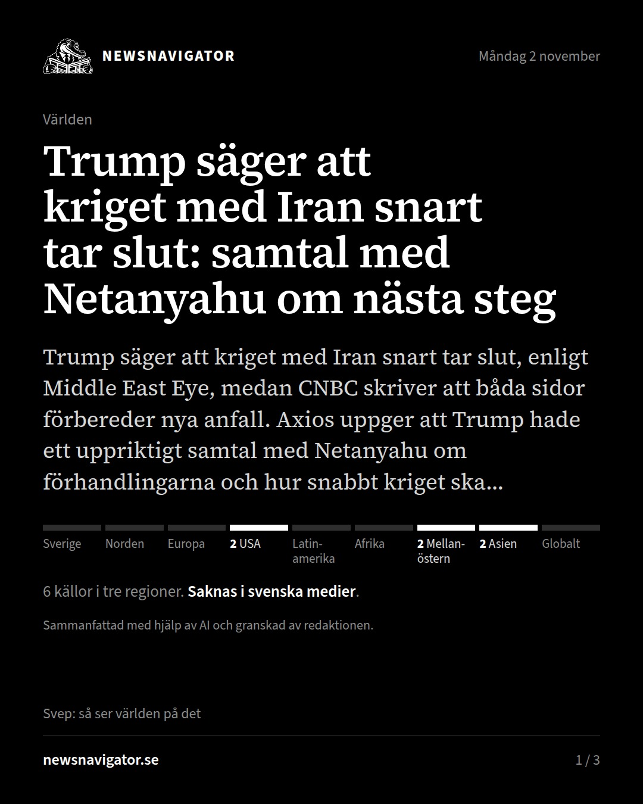
#1 · varlden · 6 källor · 2026-11-02 Kräver din genomgång: Saknas i svenska medier
Trump säger att kriget med Iran snart tar slut: samtal med Netanyahu om nästa steg
Trump säger att kriget med Iran snart tar slut, enligt Middle East Eye, medan CNBC skriver att båda sidor förbereder nya anfall. Axios uppger att Trump hade ett uppriktigt samtal med Netanyahu om förhandlingarna och hur snabbt kriget ska återupptas.
Caption
Trump säger att kriget med Iran snart tar slut: samtal med Netanyahu om nästa steg
Trump säger att kriget med Iran snart tar slut, enligt Middle East Eye, medan CNBC skriver att båda sidor förbereder nya anfall. Axios uppger att Trump hade ett uppriktigt samtal med Netanyahu om förhandlingarna och hur snabbt kriget ska återupptas.
Så ser världen på det: Amerikanska CNBC lyfter att båda sidor enligt rapporter förbereder ytterligare militära anfall efter de amerikanska mellanårsvalen, samt Rubios uttalande om att Trump vill avsluta kriget fredligt. Amerikanska Axios lyfter samtalet mellan Trump och Netanyahu och Netanyahus påtryckningar. Qatariska Al Jazeera lyfter att tankfartyg enligt IRGC träffats av minor i Hormuzsundet och Trumps uppmaning till Iran att göra en affär. Brittiska Middle East Eye lyfter Trumps uttalande om att kriget ska ta slut snart och att Iran antingen ska göra en affär eller att kriget avslutas. Singaporianska The Straits Times lyfter Trumps vilja att låta förhandlingarna gå vidare. Indiska The Hindu lyfter samtalets karaktär utifrån israeliska och amerikanska källor enligt Axios.
Källorna skiljer sig åt: Källorna beskriver Trumps linje olika. Straits Times skriver att Trump var angelägen att låta förhandlingarna med Iran fortsätta. Axios uppger enligt sina källor att Netanyahu pressar Trump att anfalla Iran omedelbart. The Hindu, som bygger på Axios, skriver att en israelisk källa beskrev samtalet som tufft medan en amerikansk källa beskrev det som direkt.
Källor: CNBC, Al Jazeera, Middle East Eye, The Straits Times, The Hindu, Axios
Hela notisen med alla länkar: https://newsnavigator.se/sv/n/2b179dc1cb/
In English: Trump says Iran war will end soon: call with Netanyahu on next steps
Sammanfattad med hjälp av AI och granskad av redaktionen. Vi levererar nyheterna. Vad du gör av dem är upp till dig.
#nyheter #newsnavigator #omvärlden #utrikes #sammanhang #källor
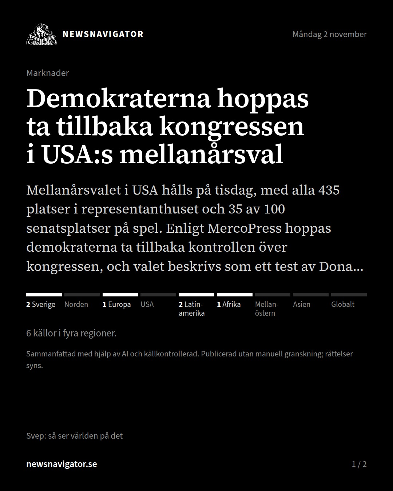
#2 · marknader · 7 källor · 2026-11-01
Demokraterna vill ta tillbaka kontrollen över kongressen i mellanårsvalet
Enligt MercoPress hålls mellanårsvalet i USA på tisdag, och demokraterna hoppas ta tillbaka kontrollen över kongressen. Alla 435 platser i representanthuset och 35 av de 100 platserna i senaten står på spel.
Caption
Demokraterna vill ta tillbaka kontrollen över kongressen i mellanårsvalet
Enligt MercoPress hålls mellanårsvalet i USA på tisdag, och demokraterna hoppas ta tillbaka kontrollen över kongressen. Alla 435 platser i representanthuset och 35 av de 100 platserna i senaten står på spel.
Så ser världen på det: Källorna lyfter olika aspekter av valet. MercoPress (Uruguay) beskriver valet som ett test av Donald Trumps andra presidentperiod. Al Jazeera (Qatar) lyfter ett rekordantal förtidsröster. The Rio Times (Brasilien) lyfter opinionsmätningar och prediktionsmarknader, som enligt artikeln gynnar demokraterna i representanthuset. El Tiempo (Colombia) lyfter latinamerikanska väljare, där demokraterna enligt ingressen leder med 30 procentenheter bland hispanics. Sveriges Radio Ekot (Sverige) lyfter staden Youngstown i Ohio. Financial Times (Storbritannien) lyfter obligationsinvesterare som avstår från att delta i valet. Dagens Industri (Sverige) skriver i rubriken att en fråga är USA-valets viktigaste, men rubriken anger inte vilken fråga det är.
Källor: MercoPress, Al Jazeera, The Rio Times, Sveriges Radio Ekot, El Tiempo, Dagens industri, Financial Times
Hela notisen med alla länkar: https://newsnavigator.se/sv/n/6ea351f85d/
In English: Democrats seek to regain control of Congress in US midterm elections
Sammanfattad med hjälp av AI och granskad av redaktionen. Vi levererar nyheterna. Vad du gör av dem är upp till dig.
#nyheter #newsnavigator #ekonomi #marknader #börsen #sammanhang #källor
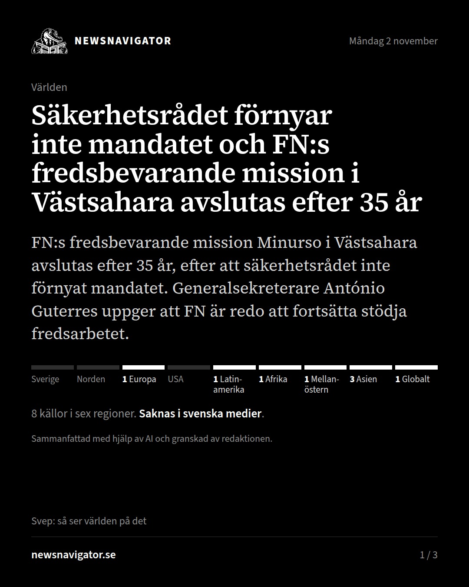
#3 · varlden · 8 källor · 2026-11-02 Kräver din genomgång: Saknas i svenska medier
Säkerhetsrådet förnyar inte mandatet och FN:s fredsbevarande mission i Västsahara avslutas efter 35 år
FN:s fredsbevarande mission Minurso i Västsahara avslutas efter 35 år, efter att säkerhetsrådet inte förnyat mandatet. Generalsekreterare António Guterres uppger att FN är redo att fortsätta stödja fredsarbetet.
Caption
Säkerhetsrådet förnyar inte mandatet och FN:s fredsbevarande mission i Västsahara avslutas efter 35 år
FN:s fredsbevarande mission Minurso i Västsahara avslutas efter 35 år, efter att säkerhetsrådet inte förnyat mandatet. Generalsekreterare António Guterres uppger att FN är redo att fortsätta stödja fredsarbetet.
Så ser världen på det: Rubrikerna lyfter olika saker. UN News (FN) lyfter FN:s beredskap att fortsätta stödja en politisk lösning. Al Jazeera (Qatar) lyfter säkerhetsrisker i regionen. El País (Spanien) lyfter risken för eskalerad konflikt och att uppdraget inte uppfyllt sitt uppdrag om en folkomröstning. Hindustan Times (Indien) lyfter den amerikansk-ryska konflikten som bakgrund till beslutet.
Källorna skiljer sig åt: Källorna skiljer sig åt i hur de beskriver Polisarios reaktion. France 24 uppger att rörelsen kallade beslutet oacceptabelt, medan The Straits Times skriver att rörelsen uttryckte oro.
Källor: UN News, Daily Maverick, Al Jazeera, France 24, The Straits Times, El País América, Hindustan Times, The Hindu
Hela notisen med alla länkar: https://newsnavigator.se/sv/n/29578425ec/
In English: Security Council does not renew mandate and UN peacekeeping mission in Western Sahara ends after 35 years
Sammanfattad med hjälp av AI och granskad av redaktionen. Vi levererar nyheterna. Vad du gör av dem är upp till dig.
#nyheter #newsnavigator #omvärlden #utrikes #sammanhang #källor
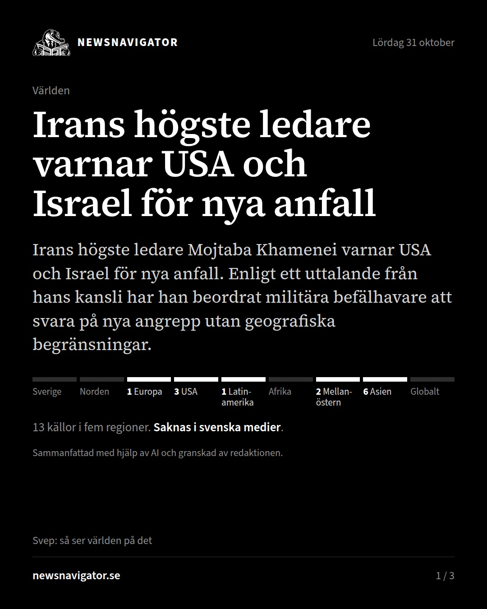
#4 · varlden · 13 källor · 2026-10-31 Kräver din genomgång: Saknas i svenska medier
Irans högste ledare varnar USA och Israel för nya anfall
Irans högste ledare Mojtaba Khamenei varnar USA och Israel för nya anfall. Enligt ett uttalande från hans kansli har han beordrat militära befälhavare att svara på nya angrepp utan geografiska begränsningar.
Caption
Irans högste ledare varnar USA och Israel för nya anfall
Irans högste ledare Mojtaba Khamenei varnar USA och Israel för nya anfall. Enligt ett uttalande från hans kansli har han beordrat militära befälhavare att svara på nya angrepp utan geografiska begränsningar.
Så ser världen på det: Amerikanska källor (Washington Examiner, Axios och The Hill) lyfter främst Khamenei och hans hot om svar på ett eventuellt amerikanskt angrepp. Iranska statsmedier (Tehran Times) lyfter i sin rubrik i stället arméns talesperson, som varnar USA, och att ett nytt krig kan vidgas geografiskt.
Källorna skiljer sig åt: The Hill skriver att Khamenei varnade på fredagen, medan flera andra källor daterar uttalandet till lördagen. Washington Examiner skriver att Trump antytt en förnyad konflikt efter mellanårsvalen, medan The Hill skriver om rapporterade amerikanska planer på att återuppta angrepp efter valet.
Källor: France 24, Washington Examiner, El Tiempo, The Hill, Al-Monitor, Axios, South China Morning Post, The Hindu och 5 till
Hela notisen med alla länkar: https://newsnavigator.se/sv/n/2369ee1ad5/
In English: Iran's supreme leader warns US and Israel against new attacks
Sammanfattad med hjälp av AI och granskad av redaktionen. Vi levererar nyheterna. Vad du gör av dem är upp till dig.
#nyheter #newsnavigator #omvärlden #utrikes #sammanhang #källor
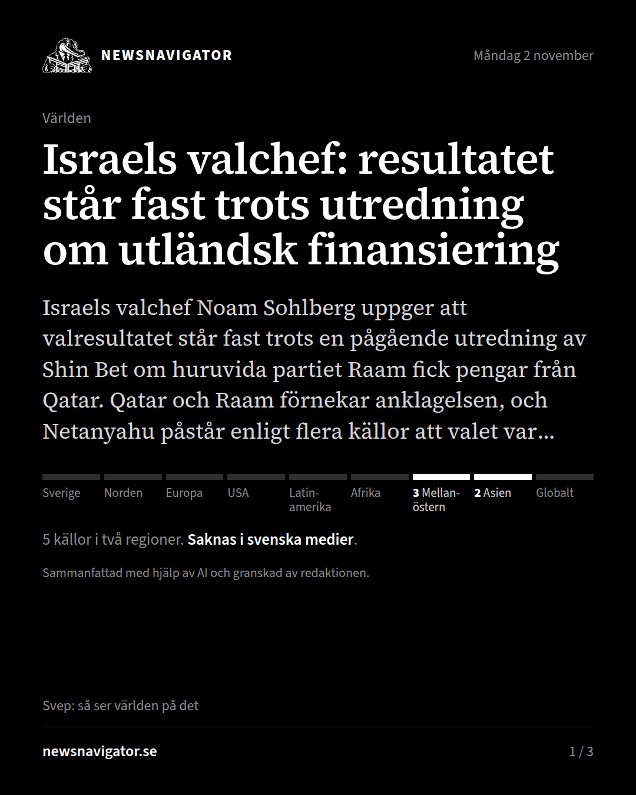
#5 · varlden · 5 källor · 2026-11-02 Kräver din genomgång: Saknas i svenska medier
Israels valchef: resultatet står fast trots utredning om utländsk finansiering
Israels valchef Noam Sohlberg uppger att valresultatet står fast trots en pågående utredning av Shin Bet om huruvida partiet Raam fick pengar från Qatar. Qatar och Raam förnekar anklagelsen, och Netanyahu påstår enligt flera källor att valet var stulet.
Caption
Israels valchef: resultatet står fast trots utredning om utländsk finansiering
Israels valchef Noam Sohlberg uppger att valresultatet står fast trots en pågående utredning av Shin Bet om huruvida partiet Raam fick pengar från Qatar. Qatar och Raam förnekar anklagelsen, och Netanyahu påstår enligt flera källor att valet var stulet.
Så ser världen på det: Al Jazeera (Qatar) och Middle East Eye (Storbritannien) lyfter i sina rubriker fram Netanyahus påstående att valet var stulet. The Straits Times (Singapore), The Hindu (Indien) och Al-Monitor (USA) lyfter i sina rubriker fram valkommitténs besked att resultatet står fast.
Källorna skiljer sig åt: Netanyahu påstår enligt rubrikerna i Al Jazeera och Middle East Eye att valet var stulet. Valkommittén säger att resultatet står fast även om anklagelserna om utländsk påverkan skulle visa sig stämma.
Källor: Al Jazeera, The Straits Times, The Hindu, Al-Monitor, Middle East Eye
Hela notisen med alla länkar: https://newsnavigator.se/sv/n/f87090517d/
In English: Israel's election chief says result stands despite inquiry into foreign funding
Sammanfattad med hjälp av AI och granskad av redaktionen. Vi levererar nyheterna. Vad du gör av dem är upp till dig.
#nyheter #newsnavigator #omvärlden #utrikes #sammanhang #källor
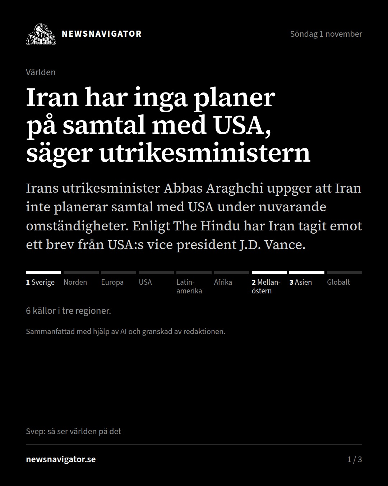
#6 · varlden · 6 källor · 2026-11-01
Iran har inga planer på samtal med USA, säger utrikesministern
Irans utrikesminister Abbas Araghchi uppger att Iran inte planerar samtal med USA under nuvarande omständigheter. Enligt The Hindu har Iran tagit emot ett brev från USA:s vice president J.D. Vance.
Caption
Iran har inga planer på samtal med USA, säger utrikesministern
Irans utrikesminister Abbas Araghchi uppger att Iran inte planerar samtal med USA under nuvarande omständigheter. Enligt The Hindu har Iran tagit emot ett brev från USA:s vice president J.D. Vance.
Så ser världen på det: Indiska The Hindu, svenska Dagens industri och iranska Tehran Times (iranska statsmedier) lyfter att Iran inte planerar samtal med USA. Kinesiska statsmedier (CGTN) lyfter i stället samtal mellan Iran och Qatar och att Teheran överväger ett amerikanskt diplomatiskt initiativ. The Straits Times och Al-Monitor (USA) har i samma flöde rubriker om Egyptens utrikesministers oro för en upptrappning i kriget mellan USA och Iran.
Källorna skiljer sig åt: CGTN (kinesiska statsmedier) rubricerar att Iran och Qatar för samtal och att Teheran väger en amerikansk diplomatisk inbjudan. The Hindu, Dagens industri och Tehran Times uppger i stället att Iran inte planerar samtal med USA. Tehran Times skriver att direkta eller indirekta förhandlingar övervägs först när Washington accepterar Irans villkor.
Källor: The Hindu, Al-Monitor, The Straits Times, Dagens industri, CGTN (statskontrollerat), Tehran Times (statskontrollerat)
Hela notisen med alla länkar: https://newsnavigator.se/sv/n/27ba45aba2/
In English: Iran has no plans for talks with US, foreign minister says
Sammanfattad med hjälp av AI och granskad av redaktionen. Vi levererar nyheterna. Vad du gör av dem är upp till dig.
#nyheter #newsnavigator #omvärlden #utrikes #sammanhang #källor
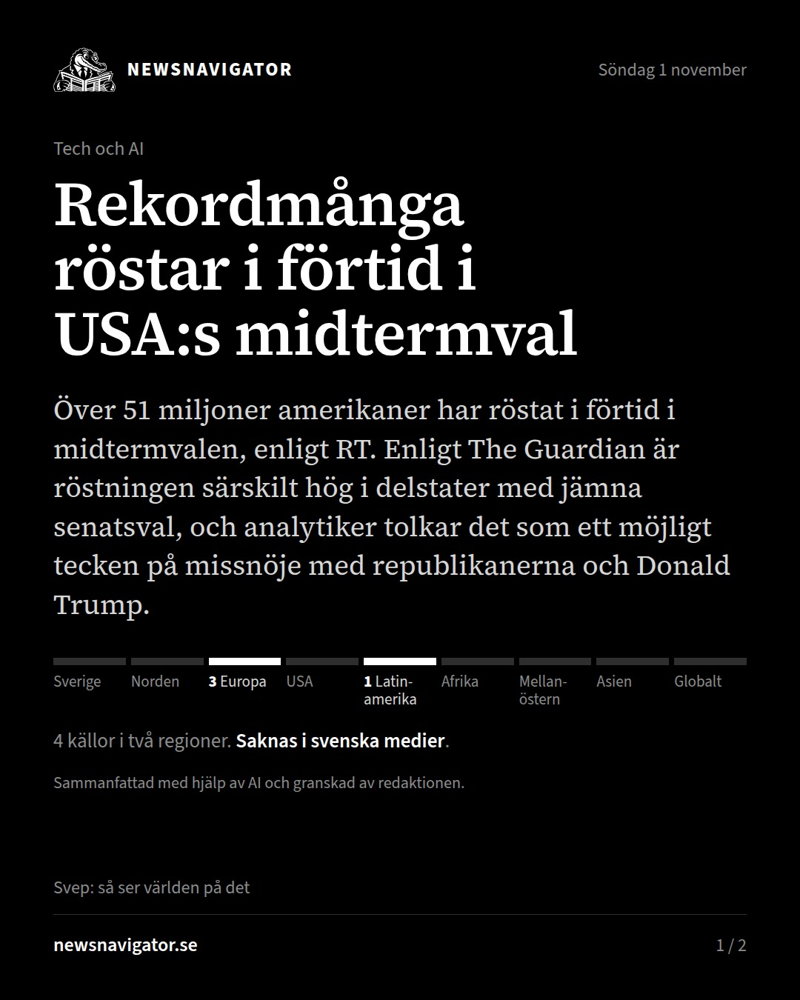
#7 · tech · 4 källor · 2026-11-01 Kräver din genomgång: Saknas i svenska medier
Rekordmånga röstar i förtid i USA:s midtermval
Över 51 miljoner amerikaner har röstat i förtid i midtermvalen, enligt RT. Enligt The Guardian är röstningen särskilt hög i delstater med jämna senatsval, och analytiker tolkar det som ett möjligt tecken på missnöje med republikanerna och Donald Trump.
Caption
Rekordmånga röstar i förtid i USA:s midtermval
Över 51 miljoner amerikaner har röstat i förtid i midtermvalen, enligt RT. Enligt The Guardian är röstningen särskilt hög i delstater med jämna senatsval, och analytiker tolkar det som ett möjligt tecken på missnöje med republikanerna och Donald Trump.
Så ser världen på det: Brittiska The Guardian lyfter att röstningen är särskilt hög i delstater med jämna senatsval och att analytiker tolkar den som ett möjligt tecken på missnöje med republikaner och Donald Trump. Ryska RT, ett statskontrollerat medium, lyfter att över 51 miljoner amerikaner har röstat i förtid och att republikanerna kämpar för att behålla kontrollen över kongressen. Spanska El País lyfter i stället en förstagångsväljare som använt en AI-chattbot för att informera sig inför valet, och att experter varnar för att uppgifterna inte är helt tillförlitliga.
Källor: The Guardian, El País (English), El País América, RT (statskontrollerat)
Hela notisen med alla länkar: https://newsnavigator.se/sv/n/9088ddf61e/
In English: Record numbers vote early in US midterm elections
Sammanfattad med hjälp av AI och granskad av redaktionen. Vi levererar nyheterna. Vad du gör av dem är upp till dig.
#nyheter #newsnavigator #teknik #ai #sammanhang #källor
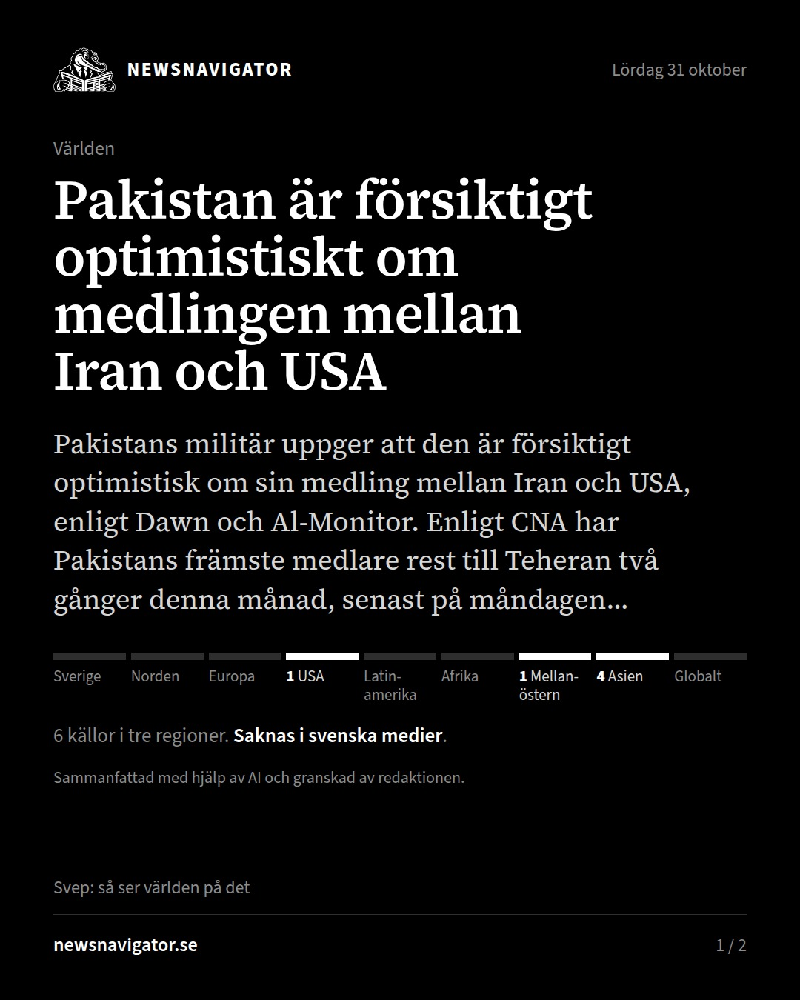
#8 · varlden · 6 källor · 2026-10-31 Kräver din genomgång: Saknas i svenska medier
Pakistan är försiktigt optimistiskt om medlingen mellan Iran och USA
Pakistans militär uppger att den är försiktigt optimistisk om sin medling mellan Iran och USA, enligt Dawn och Al-Monitor. Enligt CNA har Pakistans främste medlare rest till Teheran två gånger denna månad, senast på måndagen tillsammans med saudiska och turkiska tjänstemän.
Caption
Pakistan är försiktigt optimistiskt om medlingen mellan Iran och USA
Pakistans militär uppger att den är försiktigt optimistisk om sin medling mellan Iran och USA, enligt Dawn och Al-Monitor. Enligt CNA har Pakistans främste medlare rest till Teheran två gånger denna månad, senast på måndagen tillsammans med saudiska och turkiska tjänstemän.
Så ser världen på det: Rubrikerna om Pakistans medling är nästan likalydande i de tre källorna från Singapore (CNA), USA (Al-Monitor) och Pakistan (Dawn). CNA och Al-Monitor skriver om Pakistans militär, medan Dawn lyfter att uttalandet kommer från militärens talesman (DG ISPR).
Källor: CNA, Axios, Al-Monitor, Dawn, Hindustan Times, CGTN (statskontrollerat)
Hela notisen med alla länkar: https://newsnavigator.se/sv/n/81455c030a/
In English: Pakistan says it is cautiously optimistic about Iran-US mediation
Sammanfattad med hjälp av AI och granskad av redaktionen. Vi levererar nyheterna. Vad du gör av dem är upp till dig.
#nyheter #newsnavigator #omvärlden #utrikes #sammanhang #källor
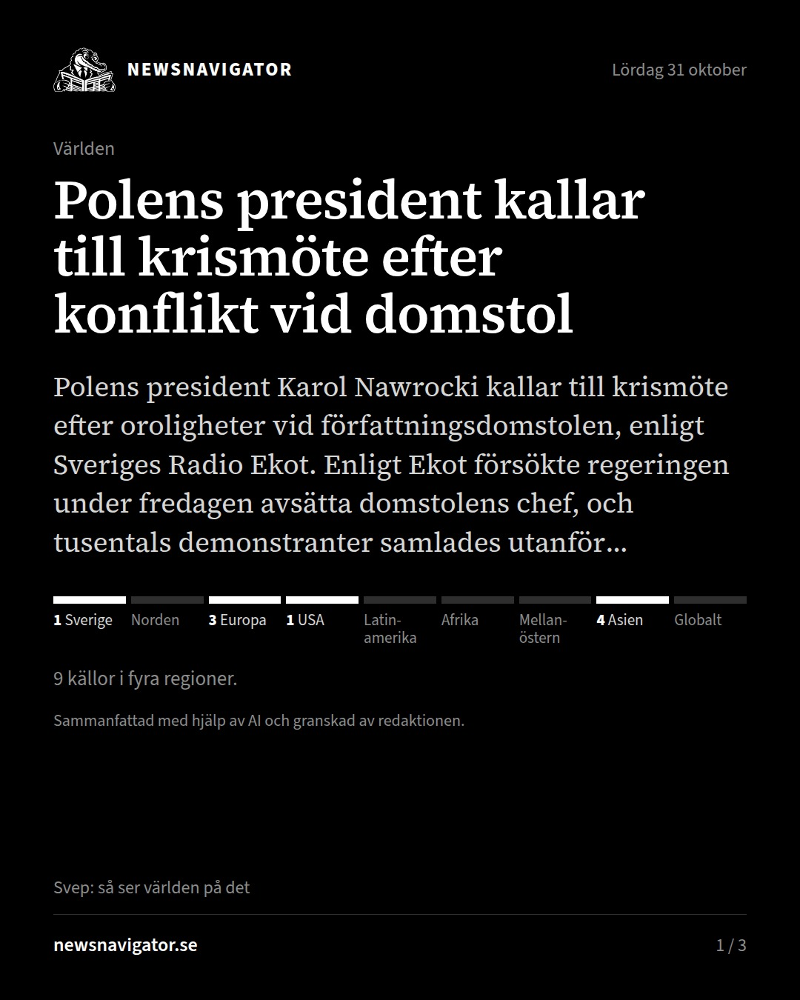
#9 · varlden · 12 källor · 2026-11-01
Polens president kallar till krismöte i konflikten om författningsdomstolen
Polens president Karol Nawrocki kallar till krismöte efter konflikten om författningsdomstolen. Enligt Ekot försökte regeringen under fredagen avsätta domstolens chef, och tusentals demonstranter samlades utanför byggnaden.
Caption
Polens president kallar till krismöte i konflikten om författningsdomstolen
Polens president Karol Nawrocki kallar till krismöte efter konflikten om författningsdomstolen. Enligt Ekot försökte regeringen under fredagen avsätta domstolens chef, och tusentals demonstranter samlades utanför byggnaden.
Så ser världen på det: Rubrikerna lyfter olika delar av händelserna. Notes from Poland (Polen) lyfter en fysisk konfrontation mellan presidenten och domare vid domstolens dörrar. Euractiv och Politico Europe lyfter krisamtal respektive att presidenten tog sig förbi demonstranter. Le Monde (Frankrike) lyfter en dramatisk konfrontation vid domstolen. Hindustan Times (Indien) lyfter en video där presidenten konfronterar domstolens 'chef', och The Hindu lyfter en expertbedömning om hur krisen kan påverka Tusk och Nawrocki inför valen 2027. The Straits Times (Singapore) lyfter Tusks försäkran om stöd för tribunalen. Al Jazeera (Qatar) lyfter att ingen av sidorna verkar backa. RT, som är statskontrollerat, lyfter att presidenten 'stormar' in i en belägrad domstol och att tribunalen anklagat Tusk för kupp.
Källorna skiljer sig åt: Källorna är oense om vad som hände vid domstolen och hur det ska tolkas. The Straits Times skriver att president Karol Nawrocki anklagat Tusk för en påtvingad övertagning av domstolen, och att Tusk velat försäkra att tribunalen kommer att verka enligt lagen. RT, som är statskontrollerat, skriver att tribunalen anklagat Tusk för en 'coup d'etat'. Enligt Ekot försökte regeringen avsätta domstolens chef. Hindustan Times kallar Anna Korwin-Piotrowska för domstolens 'chef' och Tusk-stödd. Notes from Poland beskriver en fysisk konfrontation med domare vid domstolens dörrar, medan Politico Europe skriver att Nawrocki tog sig förbi demonstranter.
Källor: Al Jazeera, The Hindu, The Straits Times, Notes from Poland, Politico Europe, Euractiv, Sveriges Radio Ekot, Hindustan Times och 4 till
Hela notisen med alla länkar: https://newsnavigator.se/sv/n/e4102bbb96/
In English: Polish president calls crisis talks in dispute over constitutional court
Sammanfattad med hjälp av AI och granskad av redaktionen. Vi levererar nyheterna. Vad du gör av dem
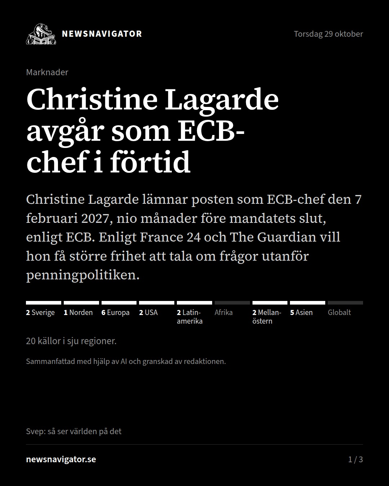
#10 · marknader · 20 källor · 2026-10-29
Christine Lagarde avgår som ECB-chef i förtid
Christine Lagarde lämnar posten som ECB-chef den 7 februari 2027, nio månader före mandatets slut, enligt ECB. Enligt France 24 och The Guardian vill hon få större frihet att tala om frågor utanför penningpolitiken.
Caption
Christine Lagarde avgår som ECB-chef i förtid
Christine Lagarde lämnar posten som ECB-chef den 7 februari 2027, nio månader före mandatets slut, enligt ECB. Enligt France 24 och The Guardian vill hon få större frihet att tala om frågor utanför penningpolitiken.
Så ser världen på det: Rubrikerna lyfter olika saker. Franska och brittiska källor (France 24, The Guardian) lyfter Lagardes egna skäl att tala fritt. South China Morning Post, The Japan Times och Rappler lyfter att avgången sker i ett läge med ökande utmaningar för Europa, där The Japan Times nämner inflationsrisker kopplade till en oljechock. The Straits Times lyfter Lagardes bakgrund som en outsider som ledde ECB på sitt sätt. Det statskontrollerade mediet The National från Förenade Arabemiraten lyfter att avgången kommer efter månader av spekulation. Amerikanska CNBC lyfter politiken bakom avgången och vem som kan efterträda henne.
Källorna skiljer sig åt: Källorna anger olika skäl till avgången. France 24 och The Guardian återger Lagardes egen förklaring att hon vill ha större frihet att uttala sig om frågor utanför penningpolitiken. Rappler skriver, med hänvisning till en källa med direkt kännedom om saken, att hon avgick för att kunna delta i politiska frågor i Frankrike och globalt. France 24 skriver att avgången väcker spekulationer om hennes framtida planer inför presidentvalet i Frankrike.
Källor: Europeiska centralbanken, France 24, Al Jazeera, The Guardian, CNBC, MercoPress, DR Nyheder, South China Morning Post och 12 till
Hela notisen med alla länkar: https://newsnavigator.se/sv/n/dfd6f755fa/
In English: ECB President Christine Lagarde to step down early
Sammanfattad med hjälp av AI och granskad av redaktionen. Vi levererar nyheterna. Vad du gör av dem är upp till dig.
#nyheter #newsnavigator #ekonomi #marknader #börsen #sammanhang #källor
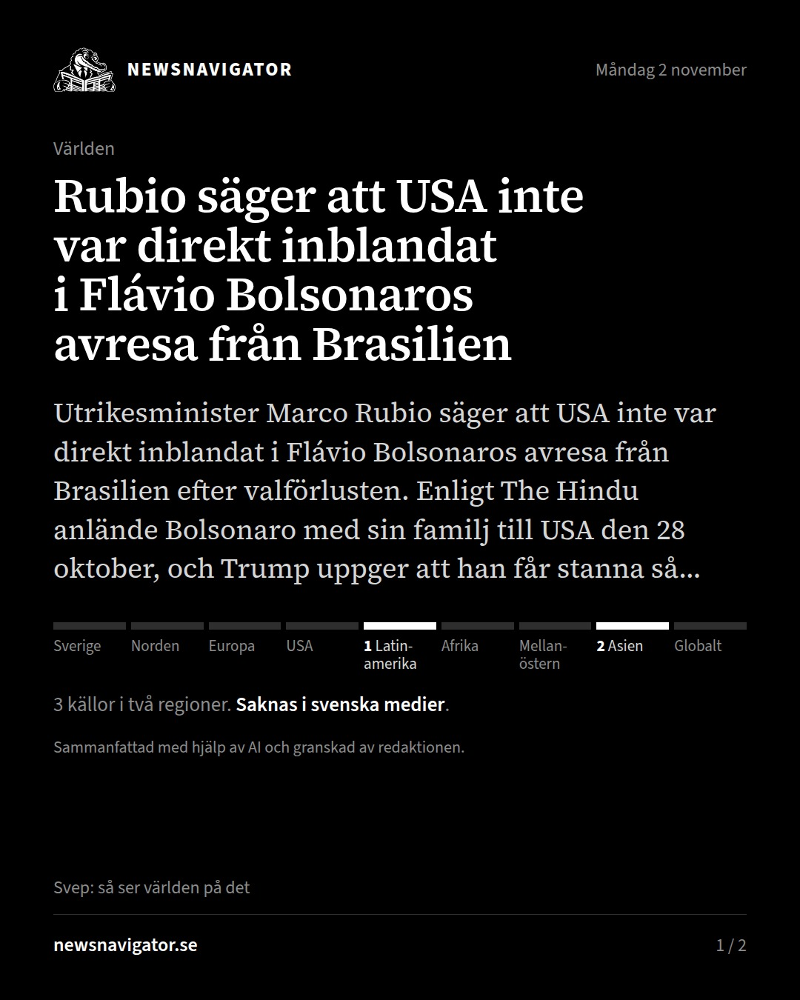
#11 · varlden · 3 källor · 2026-11-02 Kräver din genomgång: Saknas i svenska medier
Rubio säger att USA inte var direkt inblandat i Flávio Bolsonaros avresa från Brasilien
Utrikesminister Marco Rubio säger att USA inte var direkt inblandat i Flávio Bolsonaros avresa från Brasilien efter valförlusten. Enligt The Hindu anlände Bolsonaro med sin familj till USA den 28 oktober, och Trump uppger att han får stanna så länge han vill.
Caption
Rubio säger att USA inte var direkt inblandat i Flávio Bolsonaros avresa från Brasilien
Utrikesminister Marco Rubio säger att USA inte var direkt inblandat i Flávio Bolsonaros avresa från Brasilien efter valförlusten. Enligt The Hindu anlände Bolsonaro med sin familj till USA den 28 oktober, och Trump uppger att han får stanna så länge han vill.
Så ser världen på det: Buenos Aires Times lyfter i rubriken Rubios uttalande och i ingressen Trumps uttalande om att Bolsonaro kan stanna. Hindustan Times lyfter i rubriken Rubios förnekande av någon amerikansk roll i avresan. The Hindu lyfter i ingressen valdatumet för stickvalet och datumet för Bolsonaros ankomst till USA.
Källor: Buenos Aires Times, Hindustan Times, The Hindu
Hela notisen med alla länkar: https://newsnavigator.se/sv/n/711035ff58/
In English: Rubio says US was not directly involved in Flávio Bolsonaro's departure from Brazil
Sammanfattad med hjälp av AI och granskad av redaktionen. Vi levererar nyheterna. Vad du gör av dem är upp till dig.
#nyheter #newsnavigator #omvärlden #utrikes #sammanhang #källor
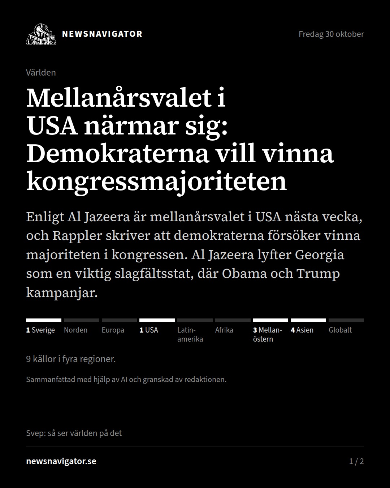
#12 · varlden · 9 källor · 2026-10-30
Mellanårsvalet i USA närmar sig: Demokraterna vill vinna kongressmajoriteten
Enligt Al Jazeera är mellanårsvalet i USA nästa vecka, och Rappler skriver att demokraterna försöker vinna majoriteten i kongressen. Al Jazeera lyfter Georgia som en viktig slagfältsstat, där Obama och Trump kampanjar.
Caption
Mellanårsvalet i USA närmar sig: Demokraterna vill vinna kongressmajoriteten
Enligt Al Jazeera är mellanårsvalet i USA nästa vecka, och Rappler skriver att demokraterna försöker vinna majoriteten i kongressen. Al Jazeera lyfter Georgia som en viktig slagfältsstat, där Obama och Trump kampanjar.
Så ser världen på det: Rubrikerna lyfter olika delar av mellanårsvalet. Al Jazeera (Qatar) lyfter Georgia som en nyckelstat där Obama och Trump kampanjar. Rappler (Filippinerna) lyfter vad som står på spel och demokraternas försök att vinna kongressmajoriteten. The Straits Times (Singapore) lyfter Trumps möjliga inblandning i valen och Vita husets uppgift om att valsäkerheten skyddas. The National (Förenade Arabemiraten, statskontrollerat medium) frågar vad som händer i valen och varför de är viktiga. CGTN (Kina, kinesiska statsmedier) har en förklarande rubrik om valen. South China Morning Post (Hongkong) nämner valet i en rubrik tillsammans med Xi Jinping och Lula. Dagens Nyheter (Sverige) kopplar valet till cheesecake i sin rubrik. The New York Times (USA) har en rubrik som bjuder in läsare att ställa frågor om valen.
Källor: Al Jazeera, Rappler, Al-Monitor, South China Morning Post, The Straits Times, The New York Times, Dagens Nyheter, The National (statskontrollerat) och 1 till
Hela notisen med alla länkar: https://newsnavigator.se/sv/n/c4ce360f79/
In English: US midterm elections approach: Democrats aim to win Congress majority
Sammanfattad med hjälp av AI och granskad av redaktionen. Vi levererar nyheterna. Vad du gör av dem är upp till dig.
#nyheter #newsnavigator #omvärlden #utrikes #sammanhang #källor
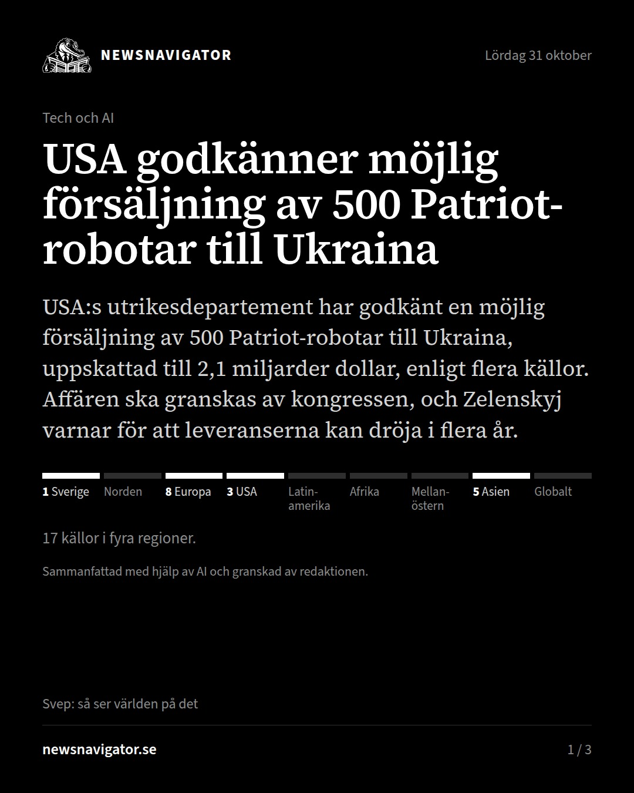
#13 · tech · 17 källor · 2026-10-31
USA godkänner möjlig försäljning av 500 Patriot-robotar till Ukraina
USA:s utrikesdepartement har godkänt en möjlig försäljning av 500 Patriot-robotar till Ukraina, uppskattad till 2,1 miljarder dollar, enligt flera källor. Affären ska granskas av kongressen, och Zelenskyj varnar för att leveranserna kan dröja i flera år.
Caption
USA godkänner möjlig försäljning av 500 Patriot-robotar till Ukraina
USA:s utrikesdepartement har godkänt en möjlig försäljning av 500 Patriot-robotar till Ukraina, uppskattad till 2,1 miljarder dollar, enligt flera källor. Affären ska granskas av kongressen, och Zelenskyj varnar för att leveranserna kan dröja i flera år.
Så ser världen på det: Europeiska rubriker (Politico, Euractiv, France 24) lyfter främst godkännandet och Zelenskyjs uppmaning eller varning. Dawn från Pakistan har samma rubrik som Euractiv. Hindustan Times (Indien) lyfter att Zelenskyj pekar på förseningar, och The Japan Times (Japan) lyfter Ukrainska myndigheters klagomål om sjunkande lager. The Straits Times (Singapore) lyfter att Ukraina väntat i nästan en månad på godkännandet. Ukrainska Kyiv Independent lyfter Zelenskyjs varning om en lång väntan på leveranser.
Källorna skiljer sig åt: Källorna anger olika belopp: 2,1 miljarder dollar (bl.a. New York Post, The Guardian, Breaking Defense och Meduza), 2,6 miljarder dollar (The Straits Times) och 3 miljarder dollar (ABC News, Australien). Om tidsutsikterna: Euractiv, Dawn och The Guardian citerar Zelenskyj om leveranser som kan ta år, medan Breaking Defense uppger att de allierade betalar och inte nämner någon tidsram.
Källor: Politico Europe, The Japan Times, Hindustan Times, Euractiv, New York Post, Dawn, The Guardian, ABC News (Australien) och 9 till
Hela notisen med alla länkar: https://newsnavigator.se/sv/n/decf886272/
In English: US approves possible sale of 500 Patriot missiles to Ukraine
Sammanfattad med hjälp av AI och granskad av redaktionen. Vi levererar nyheterna. Vad du gör av dem är upp till dig.
#nyheter #newsnavigator #teknik #ai #sammanhang #källor
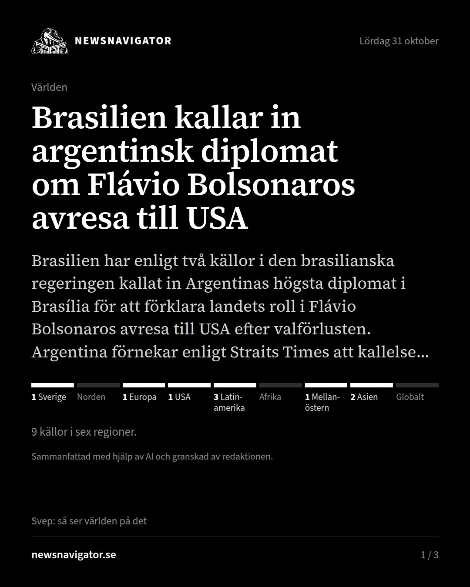
#14 · varlden · 9 källor · 2026-10-31
Brasilien kallar in argentinsk diplomat om Flávio Bolsonaros avresa till USA
Brasilien har enligt två källor i den brasilianska regeringen kallat in Argentinas högsta diplomat i Brasília för att förklara landets roll i Flávio Bolsonaros avresa till USA efter valförlusten. Argentina förnekar enligt Straits Times att kallelsen skett.
Caption
Brasilien kallar in argentinsk diplomat om Flávio Bolsonaros avresa till USA
Brasilien har enligt två källor i den brasilianska regeringen kallat in Argentinas högsta diplomat i Brasília för att förklara landets roll i Flávio Bolsonaros avresa till USA efter valförlusten. Argentina förnekar enligt Straits Times att kallelsen skett.
Så ser världen på det: Rubrikerna lyfter olika delar av händelsen. Al Jazeera (Qatar), The Straits Times (Singapore), El País (Spanien), El Tiempo (Colombia) och Buenos Aires Times (Argentina) lyfter kallelsen av den argentinska diplomaten och det diplomatiska förhållandet mellan Brasilien och Argentina. Buenos Aires Times skriver att Brasília söker förklaringar från Javier Milei-regeringen, och El País skriver att Lulas regering vill gå vidare. El Tiempo lyfter att Bolsonaro reste efter att en domare beordrat att han skulle lämna ifrån sig passet. Hindustan Times (Indien), Dagens Nyheter (Sverige), The New York Times (USA) och El País på engelska lyfter Trumps roll. El País på engelska skriver att Argentina och Ecuador samarbetade för att föra Bolsonaro ur Brasilien.
Källorna skiljer sig åt: Straits Times uppger att Argentina förnekar kallelsen. Källorna använder olika benämningar för den argentinska diplomaten: "högsta diplomat" (Straits Times) och "encargada de negocios" (El Tiempo). Om Trumps roll skiljer sig formuleringarna: Hindustan Times refererar till en rapport om att Trump ordnade en tillfällig vistelse, Dagens Nyheter skriver enligt uppgifter att Trump låg bakom resan, och New York Times rubrik anger att Trump och hans medarbetare hjälpte Bolsonaro att ta sig till USA.
Källor: Al Jazeera, The Straits Times, El País América, Buenos Aires Times, El Tiempo, Hindustan Times, El País (English), Dagens Nyheter och 1 till
Hela notisen med alla länkar: https://newsnavigator.se/sv/n/832675689d/
In English: Brazil summons Argentine diplomat over Flávio Bolsonaro's departure for US
Sammanfattad med hjälp av AI och granskad av redaktionen. Vi levererar nyheterna. Vad du gör av dem är upp till dig.
#nyheter #newsnavigator #omvärlden #utrikes #sammanhang #källor
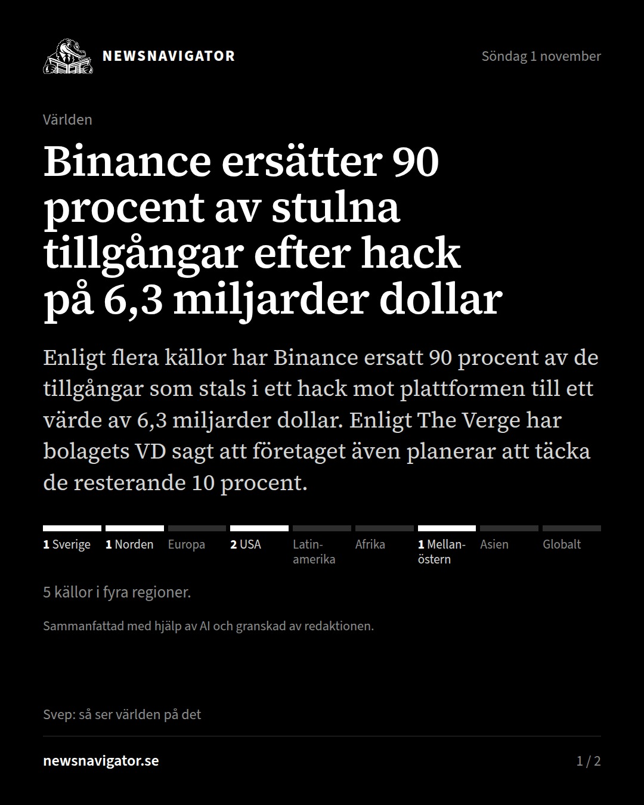
#15 · varlden · 5 källor · 2026-11-01
Binance ersätter 90 procent av stulna tillgångar efter hack på 6,3 miljarder dollar
Enligt flera källor har Binance ersatt 90 procent av de tillgångar som stals i ett hack mot plattformen till ett värde av 6,3 miljarder dollar. Enligt The Verge har bolagets VD sagt att företaget även planerar att täcka de resterande 10 procent.
Caption
Binance ersätter 90 procent av stulna tillgångar efter hack på 6,3 miljarder dollar
Enligt flera källor har Binance ersatt 90 procent av de tillgångar som stals i ett hack mot plattformen till ett värde av 6,3 miljarder dollar. Enligt The Verge har bolagets VD sagt att företaget även planerar att täcka de resterande 10 procent.
Så ser världen på det: Den amerikanska nyhetssajten The Hill lyfter fram att Binance har återfått 90 procent av tillgångarna. The Verge lyfter fram att uppgiften kommer från bolagets VD och att företaget ska täcka resten. Danska DR skriver i rubriken att börsen erstatter 90 procent efter milliardtyveriet. Svenska Dagens industri lyfter fram att 90 procent har återbetalats. Det statskontrollerade mediet The National från Förenade Arabemiraten skriver i rubriken att Binance täcker 90 procent och anger stöldens storlek på 6,3 miljarder dollar.
Källor: The Hill, The Verge, DR Nyheder, Dagens industri, The National (statskontrollerat)
Hela notisen med alla länkar: https://newsnavigator.se/sv/n/1a7c42d73c/
In English: Binance replaces 90% of assets stolen in $6.3 billion hack
Sammanfattad med hjälp av AI och granskad av redaktionen. Vi levererar nyheterna. Vad du gör av dem är upp till dig.
#nyheter #newsnavigator #omvärlden #utrikes #sammanhang #källor
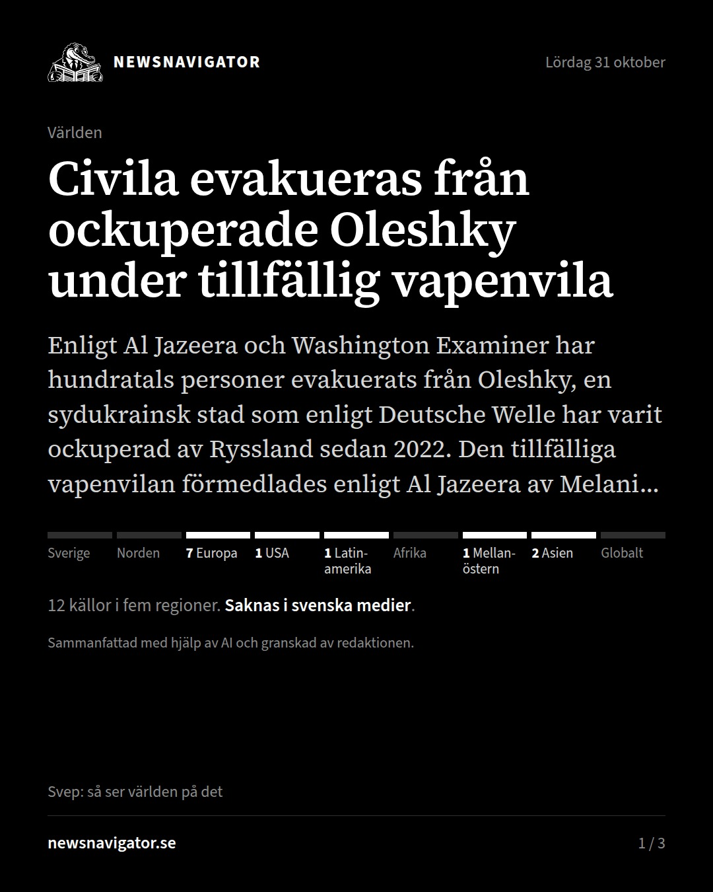
#16 · varlden · 12 källor · 2026-10-31 Kräver din genomgång: Saknas i svenska medier
Civila evakueras från ockuperade Oleshky under tillfällig vapenvila
Enligt Al Jazeera och Washington Examiner har hundratals personer evakuerats från Oleshky, en sydukrainsk stad som enligt Deutsche Welle har varit ockuperad av Ryssland sedan 2022. Den tillfälliga vapenvilan förmedlades enligt Al Jazeera av Melania Trump, medan France 24 skriver att USA förmedlade den.
Caption
Civila evakueras från ockuperade Oleshky under tillfällig vapenvila
Enligt Al Jazeera och Washington Examiner har hundratals personer evakuerats från Oleshky, en sydukrainsk stad som enligt Deutsche Welle har varit ockuperad av Ryssland sedan 2022. Den tillfälliga vapenvilan förmedlades enligt Al Jazeera av Melania Trump, medan France 24 skriver att USA förmedlade den.
Så ser världen på det: Rubrikerna lyfter olika delar av händelserna. Al Jazeera (Qatar) och Washington Examiner (USA) har Melania Trump i rubriken. BBC (Storbritannien) frågar hur vapenvilan har utvecklats. Kyiv Independent (Ukraina) lyfter att evakueringskonvojerna delas mellan Ukraina och Ryssland. Meduza (Lettland) citerar den ryska människorättsombudsmannen Yana Lantratova om att det humanitära uppdraget håller på att avslutas.
Källorna skiljer sig åt: Källorna skiljer sig åt om vart de evakuerade förs. Kyiv Independent och France 24 uppger, med hänvisning till David Arakhamia, att de är på väg till Anapa i Krasnodar krai i Ryssland. El País uppger, med hänvisning till den ryska ombudsmannen, att konvojen har nått norra Krim. Källorna anger också olika förmedlare: Al Jazeera pekar ut Melania Trump, medan France 24 pekar ut USA.
Källor: Al Jazeera, BBC World, France 24, Washington Examiner, Deutsche Welle, The Guardian, Meduza, The Straits Times och 4 till
Hela notisen med alla länkar: https://newsnavigator.se/sv/n/d2cfc637ae/
In English: Civilians evacuated from occupied Oleshky under temporary ceasefire
Sammanfattad med hjälp av AI och granskad av redaktionen. Vi levererar nyheterna. Vad du gör av dem är upp till dig.
#nyheter #newsnavigator #omvärlden #utrikes #sammanhang #källor
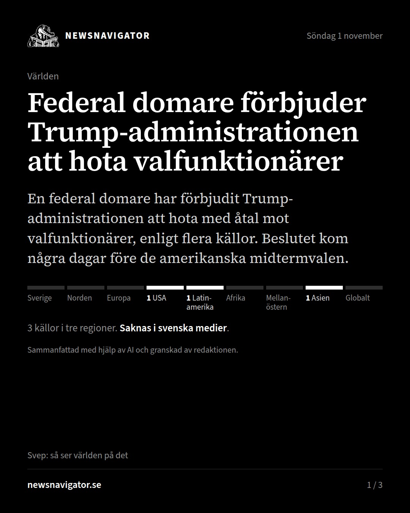
#17 · varlden · 3 källor · 2026-11-01 Kräver din genomgång: Saknas i svenska medier
Federal domare förbjuder Trump-administrationen att hota valfunktionärer
En federal domare har förbjudit Trump-administrationen att hota med åtal mot valfunktionärer, enligt flera källor. Beslutet kom några dagar före de amerikanska midtermvalen.
Caption
Federal domare förbjuder Trump-administrationen att hota valfunktionärer
En federal domare har förbjudit Trump-administrationen att hota med åtal mot valfunktionärer, enligt flera källor. Beslutet kom några dagar före de amerikanska midtermvalen.
Så ser världen på det: The Rio Times (Brasilien) rubricerar domen som ett förbud mot hot mot valfunktionärer över omstridda röster och lyfter en Alaska-senatsstrid. Fox News (USA) lyfter att rösterna är kopplade till misstänkta icke-medborgare och att domen gäller hot om åtal. The Straits Times (Singapore) lyfter att domen kom några dagar före midtermvalen som avgör kontrollen över kongressen.
Källorna skiljer sig åt: Källorna beskriver olika sammanhang för de omstridda rösterna. The Rio Times kopplar domen till omstridda röster i en Alaska-senatsstrid som går till domstol, medan Fox News kopplar rösterna till misstänkta icke-medborgare.
Källor: The Rio Times, Fox News, The Straits Times
Hela notisen med alla länkar: https://newsnavigator.se/sv/n/55a4f5a989/
In English: Federal judge bars Trump administration from threatening election officials
Sammanfattad med hjälp av AI och granskad av redaktionen. Vi levererar nyheterna. Vad du gör av dem är upp till dig.
#nyheter #newsnavigator #omvärlden #utrikes #sammanhang #källor
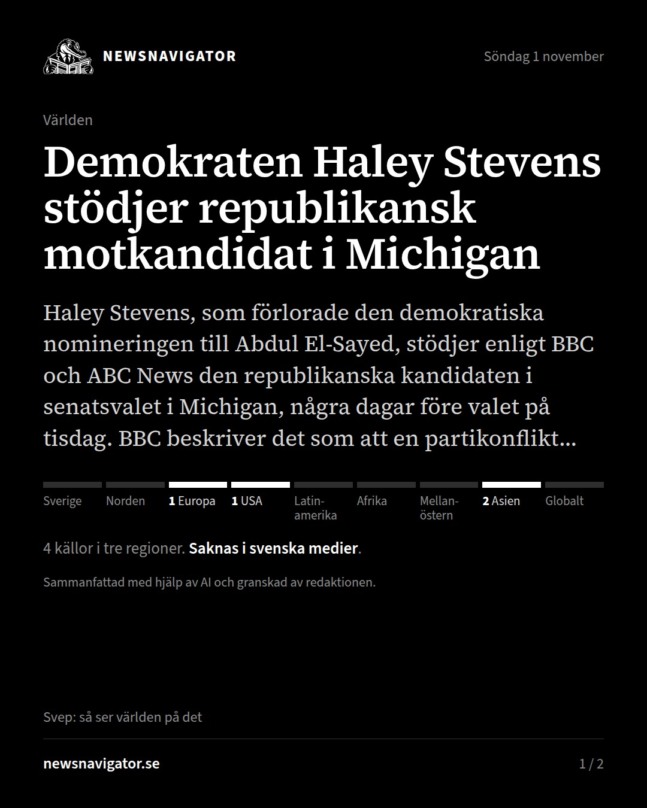
#18 · varlden · 4 källor · 2026-11-01 Kräver din genomgång: Saknas i svenska medier
Demokraten Haley Stevens stödjer republikansk motkandidat i Michigan
Haley Stevens, som förlorade den demokratiska nomineringen till Abdul El-Sayed, stödjer enligt BBC och ABC News den republikanska kandidaten i senatsvalet i Michigan, några dagar före valet på tisdag. BBC beskriver det som att en partikonflikt trappas upp.
Caption
Demokraten Haley Stevens stödjer republikansk motkandidat i Michigan
Haley Stevens, som förlorade den demokratiska nomineringen till Abdul El-Sayed, stödjer enligt BBC och ABC News den republikanska kandidaten i senatsvalet i Michigan, några dagar före valet på tisdag. BBC beskriver det som att en partikonflikt trappas upp.
Så ser världen på det: Brittiska BBC och australiska ABC News lyfter båda Stevens stöd för den republikanska kandidaten och placerar det i en intern partikonflikt. ABC News rubrik innehåller orden 'despicable betrayal', medan BBC framhåller att konflikten eskalerar. Indiska Hindustan Times lyfter i sin rubrik i stället en republikansk kandidat i Georgias 6:e distrikt och dennes syn på Trumps Iranpolitik. Amerikanska New York Times lyfter i sin rubrik Trump och det republikanska partiets personliga angrepp i slutet av midtermvalkampanjen.
Källor: BBC World, ABC News (Australien), Hindustan Times, The New York Times
Hela notisen med alla länkar: https://newsnavigator.se/sv/n/869e0a7bca/
In English: Democrat Haley Stevens endorses Republican opponent in Michigan Senate race
Sammanfattad med hjälp av AI och granskad av redaktionen. Vi levererar nyheterna. Vad du gör av dem är upp till dig.
#nyheter #newsnavigator #omvärlden #utrikes #sammanhang #källor
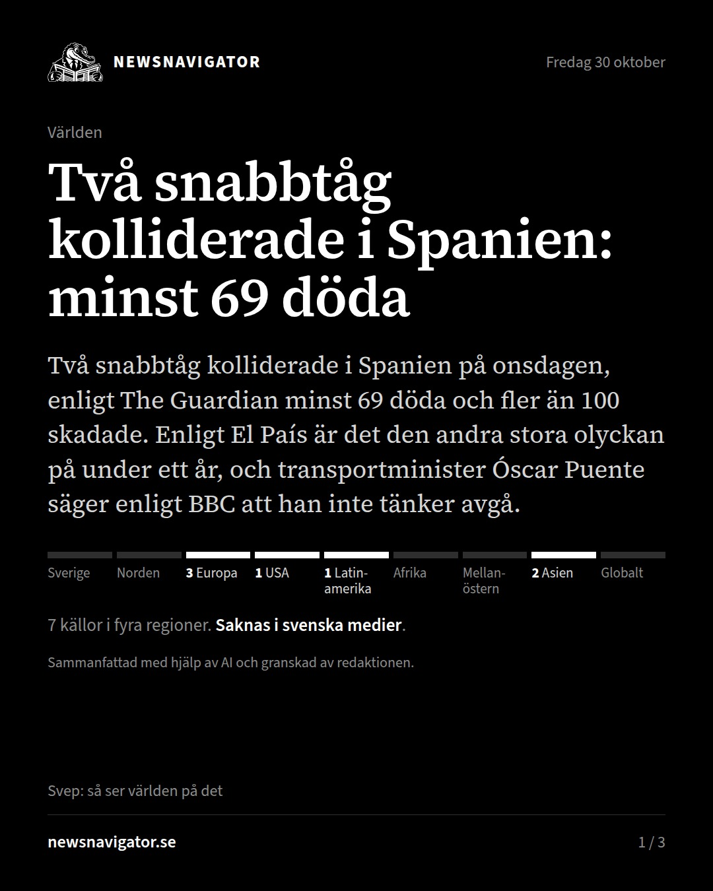
#19 · varlden · 7 källor · 2026-10-30 Kräver din genomgång: Saknas i svenska medier
Två snabbtåg kolliderade i Spanien: minst 69 döda
Två snabbtåg kolliderade i Spanien på onsdagen, enligt The Guardian minst 69 döda och fler än 100 skadade. Enligt El País är det den andra stora olyckan på under ett år, och transportminister Óscar Puente säger enligt BBC att han inte tänker avgå.
Caption
Två snabbtåg kolliderade i Spanien: minst 69 döda
Två snabbtåg kolliderade i Spanien på onsdagen, enligt The Guardian minst 69 döda och fler än 100 skadade. Enligt El País är det den andra stora olyckan på under ett år, och transportminister Óscar Puente säger enligt BBC att han inte tänker avgå.
Så ser världen på det: Brittiska BBC lyfter transportminister Óscar Puentes besked att han inte avgår, medan The Guardian lyfter premiärminister Pedro Sánchez uttalande om att förtroendet för höghastighetståg har skadats. Spanska El País lyfter fackförbundens kritik mot arbetsvillkoren vid Adifs kontrollcenter. Australiska ABC News lyfter att två australiska medborgare inte har kunnat bekräftas i säkerhet. Indiska Hindustan Times lyfter att järnvägssäkerhet har blivit en kampanjfråga inför kommande val. Amerikanska The Wall Street Journal ställer frågan varför Spanien upprepade gånger drabbas av dödliga järnvägsolyckor, en rubrik som också Hindustan Times använder.
Källorna skiljer sig åt: Ingen direkt motsägelse i materialet om antal döda eller skadade. Källorna skiljer sig åt i vad de lyfter fram, se perspektiv_sv.
Källor: BBC World, El País (English), El País América, The Guardian, ABC News (Australien), Hindustan Times, The Wall Street Journal
Hela notisen med alla länkar: https://newsnavigator.se/sv/n/42dd92172d/
In English: Two high-speed trains collide in Spain, at least 69 dead
Sammanfattad med hjälp av AI och granskad av redaktionen. Vi levererar nyheterna. Vad du gör av dem är upp till dig.
#nyheter #newsnavigator #omvärlden #utrikes #sammanhang #källor
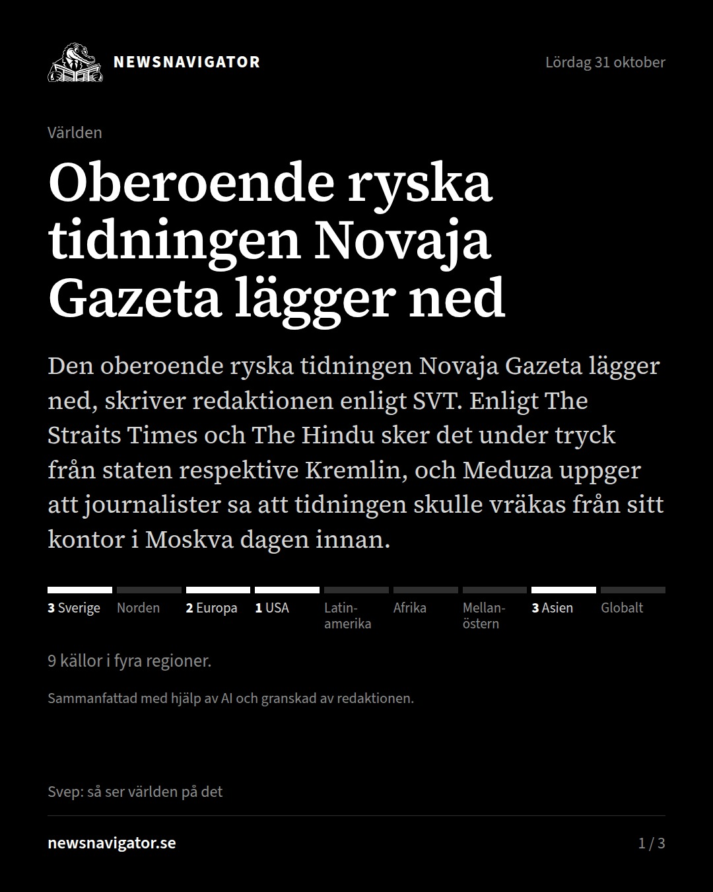
#20 · varlden · 9 källor · 2026-11-01
USA varnade Ryssland för möjligt terrordåd i Moskva
Enligt USA:s ambassad i Moskva finns ett trovärdigt hot om en masskadehändelse vid museikomplexet Tsaritsyno på lördagen. Ryska säkerhetstjänsten FSB uppger att den fått information från USA och vidtagit åtgärder.
Caption
USA varnade Ryssland för möjligt terrordåd i Moskva
Enligt USA:s ambassad i Moskva finns ett trovärdigt hot om en masskadehändelse vid museikomplexet Tsaritsyno på lördagen. Ryska säkerhetstjänsten FSB uppger att den fått information från USA och vidtagit åtgärder.
Så ser världen på det: Den ryska säkerhetstjänsten FSB och dess uttalande om att information mottagits från USA lyfts fram av The Straits Times, Meduza och The Hindu. Kyiv Independent (Ukraina) lyfter ambassadens bedömning av hotet som trovärdigt och att den samordnar med ryska myndigheter. Hindustan Times (Indien) lyfter platsen och att amerikaner uppmanats vidta försiktighetsåtgärder. Svenska källor lyfter ambassadens uppmaning att undvika Tsaritsyno och folksamlingar.
Källorna skiljer sig åt: Källorna skiljer sig åt om när hotet väntas. Sveriges Radio Ekot skriver att dådet kan ske på lördagen, medan rubriken säger ikväll. SVT skriver i dag. Övriga källor anger ingen tidpunkt. The Hindu skriver att extremister hade планer om ett angrepp, medan Kyiv Independent och SVT framhåller att ambassaden bedömt hotet som trovärdigt.
Källor: The Hindu, Hindustan Times, Meduza, The Straits Times, The Kyiv Independent, Sveriges Radio Ekot, SVT Nyheter, Fox News och 1 till
Hela notisen med alla länkar: https://newsnavigator.se/sv/n/f85820ead2/
In English: US warned Russia of possible attack at Moscow museum, FSB says
Sammanfattad med hjälp av AI och granskad av redaktionen. Vi levererar nyheterna. Vad du gör av dem är upp till dig.
#nyheter #newsnavigator #omvärlden #utrikes #sammanhang #källor
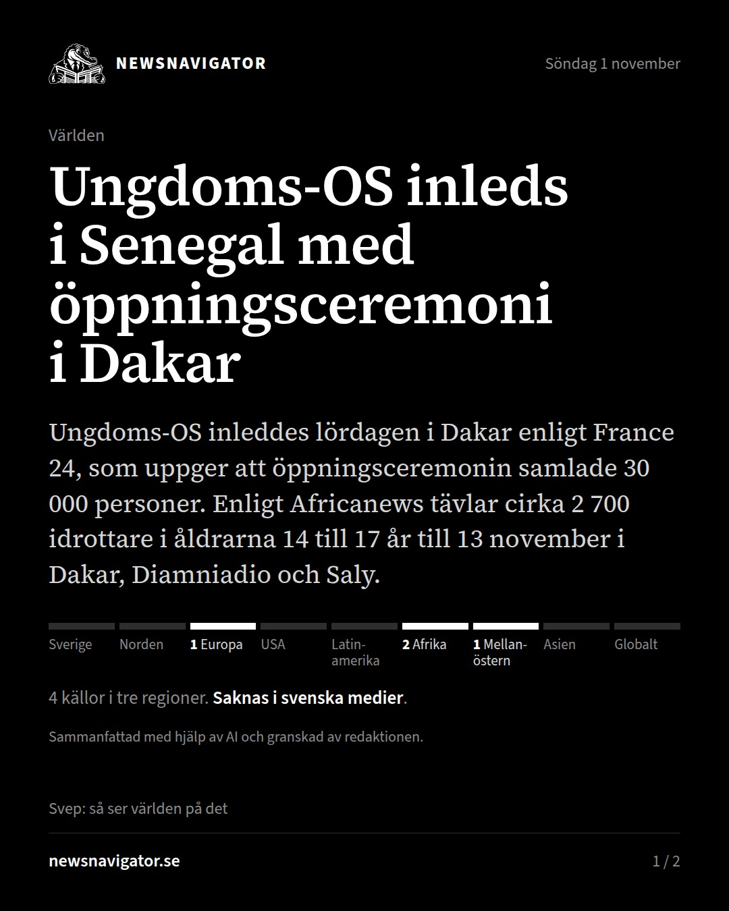
#21 · varlden · 4 källor · 2026-11-01 Kräver din genomgång: Saknas i svenska medier
Ungdoms-OS inleds i Senegal med öppningsceremoni i Dakar
Ungdoms-OS inleddes lördagen i Dakar enligt France 24, som uppger att öppningsceremonin samlade 30 000 personer. Enligt Africanews tävlar cirka 2 700 idrottare i åldrarna 14 till 17 år till 13 november i Dakar, Diamniadio och Saly.
Caption
Ungdoms-OS inleds i Senegal med öppningsceremoni i Dakar
Ungdoms-OS inleddes lördagen i Dakar enligt France 24, som uppger att öppningsceremonin samlade 30 000 personer. Enligt Africanews tävlar cirka 2 700 idrottare i åldrarna 14 till 17 år till 13 november i Dakar, Diamniadio och Saly.
Så ser världen på det: France 24 (Frankrike) lyfter firandet och att tävlingen för första gången hålls på afrikansk mark. Premium Times (Nigeria) lyfter Nigerias trupp på 19 deltagare och fanbäraren, sprintern Rosemary Chigozie Nwankwo. Africanews lyfter antalet idrottare och tävlingsorterna. Al Jazeera (Qatar) har endast en rubrik och en ingress som upprepar den.
Källor: Al Jazeera, France 24, Premium Times, Africanews
Hela notisen med alla länkar: https://newsnavigator.se/sv/n/ca4b21524c/
In English: Youth Olympic Games open in Senegal with ceremony in Dakar
Sammanfattad med hjälp av AI och granskad av redaktionen. Vi levererar nyheterna. Vad du gör av dem är upp till dig.
#nyheter #newsnavigator #omvärlden #utrikes #sammanhang #källor
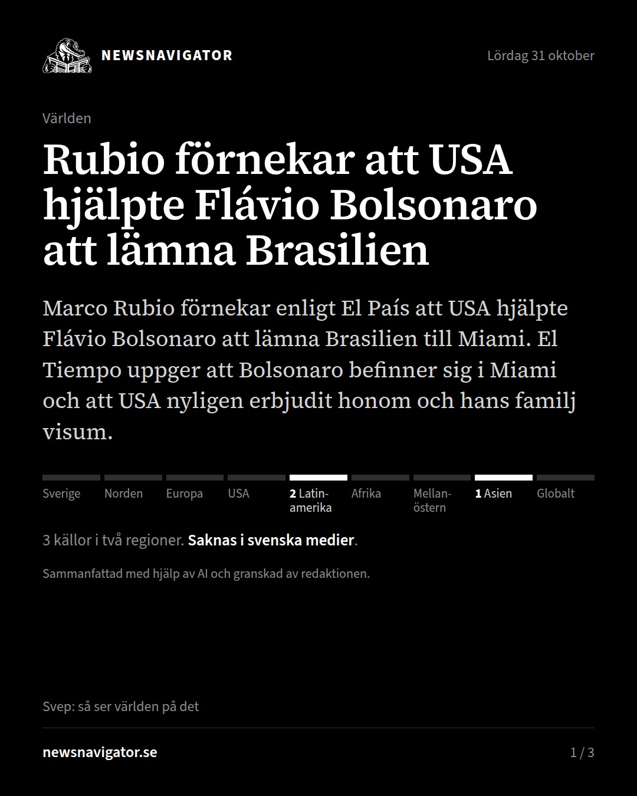
#22 · varlden · 3 källor · 2026-10-31 Kräver din genomgång: Saknas i svenska medier
Rubio förnekar att USA hjälpte Flávio Bolsonaro att lämna Brasilien
Marco Rubio förnekar enligt El País att USA hjälpte Flávio Bolsonaro att lämna Brasilien till Miami. El Tiempo uppger att Bolsonaro befinner sig i Miami och att USA nyligen erbjudit honom och hans familj visum.
Caption
Rubio förnekar att USA hjälpte Flávio Bolsonaro att lämna Brasilien
Marco Rubio förnekar enligt El País att USA hjälpte Flávio Bolsonaro att lämna Brasilien till Miami. El Tiempo uppger att Bolsonaro befinner sig i Miami och att USA nyligen erbjudit honom och hans familj visum.
Så ser världen på det: Spanska och colombianska rubriker lyfter Rubios förnekande att USA hjälpte Bolsonaro att lämna Brasilien. Den indiska rubriken från Hindustan Times lyfter i stället Brasiliens diplomatiska reaktion och uppgiften att Bolsonaro flydde via Argentina.
Källorna skiljer sig åt: El Tiempo uppger att USA nyligen erbjöd Bolsonaro och hans familj visum, medan El País skriver att Rubio förnekar att USA underlättade avresan.
Källor: El País América, El Tiempo, Hindustan Times
Hela notisen med alla länkar: https://newsnavigator.se/sv/n/2a6cbc115f/
In English: Rubio denies US helped Flávio Bolsonaro leave Brazil
Sammanfattad med hjälp av AI och granskad av redaktionen. Vi levererar nyheterna. Vad du gör av dem är upp till dig.
#nyheter #newsnavigator #omvärlden #utrikes #sammanhang #källor
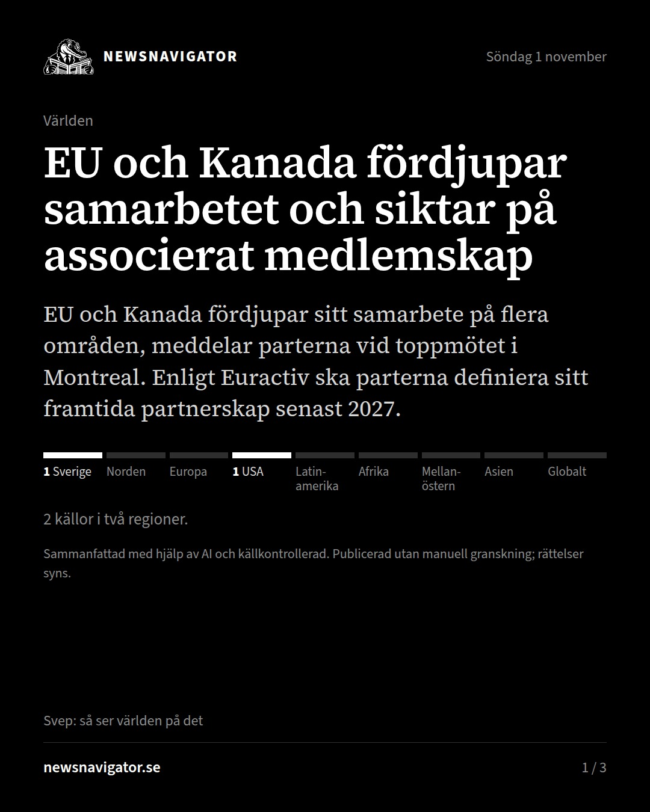
#23 · varlden · 3 källor · 2026-11-01
EU och Kanada fördjupar samarbetet och siktar på associerat medlemskap
EU och Kanada fördjupar sitt samarbete på flera områden, meddelar parterna vid toppmötet i Montreal. Enligt Euractiv ska parterna definiera sitt framtida partnerskap senast 2027.
Caption
EU och Kanada fördjupar samarbetet och siktar på associerat medlemskap
EU och Kanada fördjupar sitt samarbete på flera områden, meddelar parterna vid toppmötet i Montreal. Enligt Euractiv ska parterna definiera sitt framtida partnerskap senast 2027.
Så ser världen på det: SVT lyfter målet om ett associerat medlemskap för Kanada, enligt Carney. Euractiv lyfter tidsramen 2027 och att politiska hinder kvarstår. The Wall Street Journal lyfter vägen fram mot upplägget.
Källorna skiljer sig åt: SVT skriver att målet är att Kanada ska bli EU:s första associerade medlem, enligt premiärminister Mark Carney. The Wall Street Journal skriver att ledarna har lagt fram en väg mot ett associerat medlemskap. Euractiv skriver att Kanada närmar sig ett associerat medlemskap men att politiska hinder kvarstår.
Källor: SVT Nyheter, Euractiv, The Wall Street Journal
Hela notisen med alla länkar: https://newsnavigator.se/sv/n/4a1d17c3a4/
In English: EU and Canada deepen cooperation and aim for associate membership
Sammanfattad med hjälp av AI och granskad av redaktionen. Vi levererar nyheterna. Vad du gör av dem är upp till dig.
#nyheter #newsnavigator #omvärlden #utrikes #sammanhang #källor
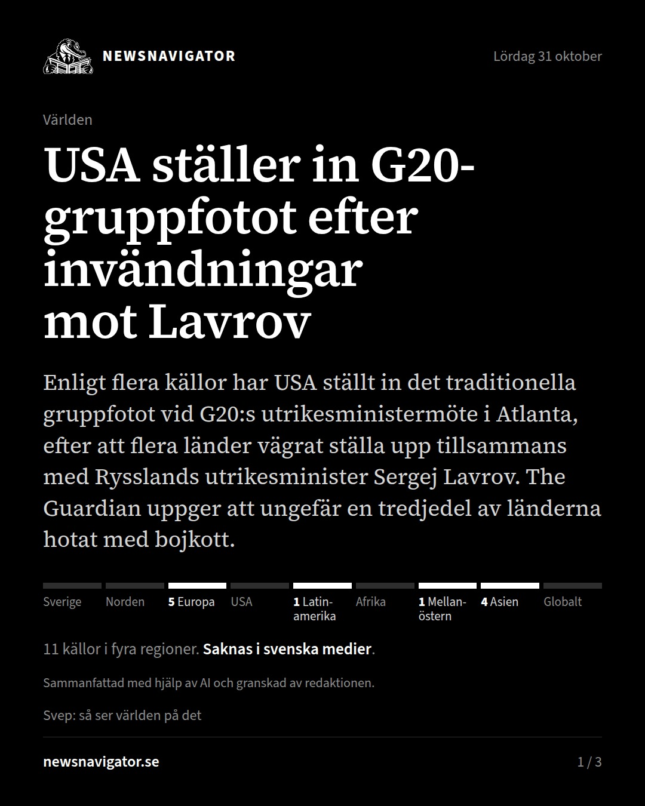
#24 · varlden · 11 källor · 2026-10-31 Kräver din genomgång: Saknas i svenska medier
USA ställer in G20-gruppfotot efter invändningar mot Lavrov
Enligt flera källor har USA ställt in det traditionella gruppfotot vid G20:s utrikesministermöte i Atlanta, efter att flera länder vägrat ställa upp tillsammans med Rysslands utrikesminister Sergej Lavrov. The Guardian uppger att ungefär en tredjedel av länderna hotat med bojkott.
Caption
USA ställer in G20-gruppfotot efter invändningar mot Lavrov
Enligt flera källor har USA ställt in det traditionella gruppfotot vid G20:s utrikesministermöte i Atlanta, efter att flera länder vägrat ställa upp tillsammans med Rysslands utrikesminister Sergej Lavrov. The Guardian uppger att ungefär en tredjedel av länderna hotat med bojkott.
Så ser världen på det: Brittiska BBC lyfter att utrikesminister Ed Miliband konfronterade Lavrov och anklagade den ryska regeringen för att ha dödat oskyldiga civila i Ukraina. Japan Times fokuserar på Japans krav på frigivning av en japansk medborgare vid ett möte med Lavrov. Tyska Deutsche Welle lyfter Lavrovs uttalande om att Zelenskyj bör resa till Ryssland om han vill ha samtal med Putin. Singaporeanska The Straits Times lyfter Lavrovs kritik mot att Polen bjudits in till G20-möten. Qatariska Al Jazeera lyfter Irankriget, störningar i Hormuzsundet och Ukrainafrågan som splittrande för G20.
Källorna skiljer sig åt: Källorna skiljer sig åt i hur många länder som vägrade och vilka de var. The Guardian nämner Australien och Storbritannien och uppger att ungefär en tredjedel av länderna hotat med bojkott. Meduza skriver om flera ministrar och Hindustan Times om flera europeiska representanter. The Kyiv Independent skriver att inställandet uppges ha skett och återger den tyske utrikesministern Johann Wadephul, enligt n-tv, som sagt att något gruppfoto med européerna och Lavrov inte kommer att tas.
Källor: The Hindu, The Japan Times, Deutsche Welle, The Guardian, The Straits Times, BBC World, Al Jazeera, Meduza och 3 till
Hela notisen med alla länkar: https://newsnavigator.se/sv/n/2dbea39edf/
In English: US cancels G20 group photo after objections to Lavrov's presence
Sammanfattad med hjälp av AI och granskad av redaktionen. Vi levererar nyheterna. Vad du gör av dem är upp till dig.
#nyheter #newsnavigator #omvärlden #utrikes #sammanhang #källor
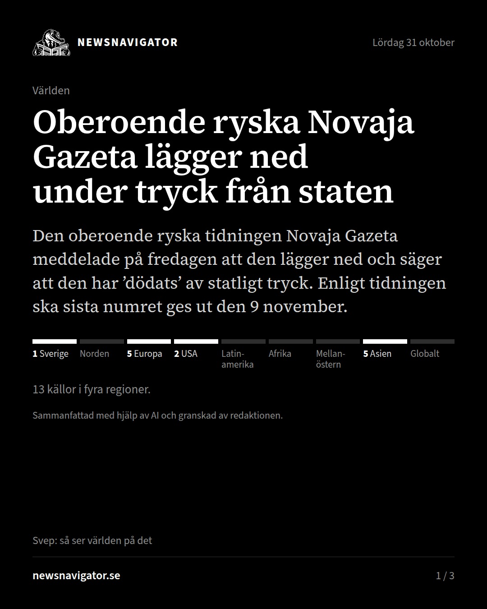
#25 · varlden · 13 källor · 2026-10-31
Oberoende ryska Novaja Gazeta lägger ned under tryck från staten
Den oberoende ryska tidningen Novaja Gazeta meddelade på fredagen att den lägger ned och säger att den har ’dödats’ av statligt tryck. Enligt tidningen ska sista numret ges ut den 9 november.
Caption
Oberoende ryska Novaja Gazeta lägger ned under tryck från staten
Den oberoende ryska tidningen Novaja Gazeta meddelade på fredagen att den lägger ned och säger att den har ’dödats’ av statligt tryck. Enligt tidningen ska sista numret ges ut den 9 november.
Så ser världen på det: Brittiska The Guardian lyfter att tidningen uppger att det ryska samhället ’systematiskt krossas’ och påminner om att tidningens förre redaktör Dmitrij Muratov fick Nobelpriset. Indiska Hindustan Times lyfter att tidningen placerats på en statlig fiendelista. Franska France 24 lyfter att Kremlins hårdare linje och ett förbud mot mediet gjort det omöjligt att fortsätta arbeta. Singaporeanska The Straits Times och hongkongbaserade South China Morning Post lyfter tidningens egen beskrivning att den ’dödats’ av statligt tryck.
Källor: The Straits Times, South China Morning Post, Washington Examiner, Meduza, The Hindu, France 24, The Guardian, Rappler och 5 till
Hela notisen med alla länkar: https://newsnavigator.se/sv/n/5b1bdcd234/
In English: Independent Russian newspaper Novaya Gazeta to close under state pressure
Sammanfattad med hjälp av AI och granskad av redaktionen. Vi levererar nyheterna. Vad du gör av dem är upp till dig.
#nyheter #newsnavigator #omvärlden #utrikes #sammanhang #källor
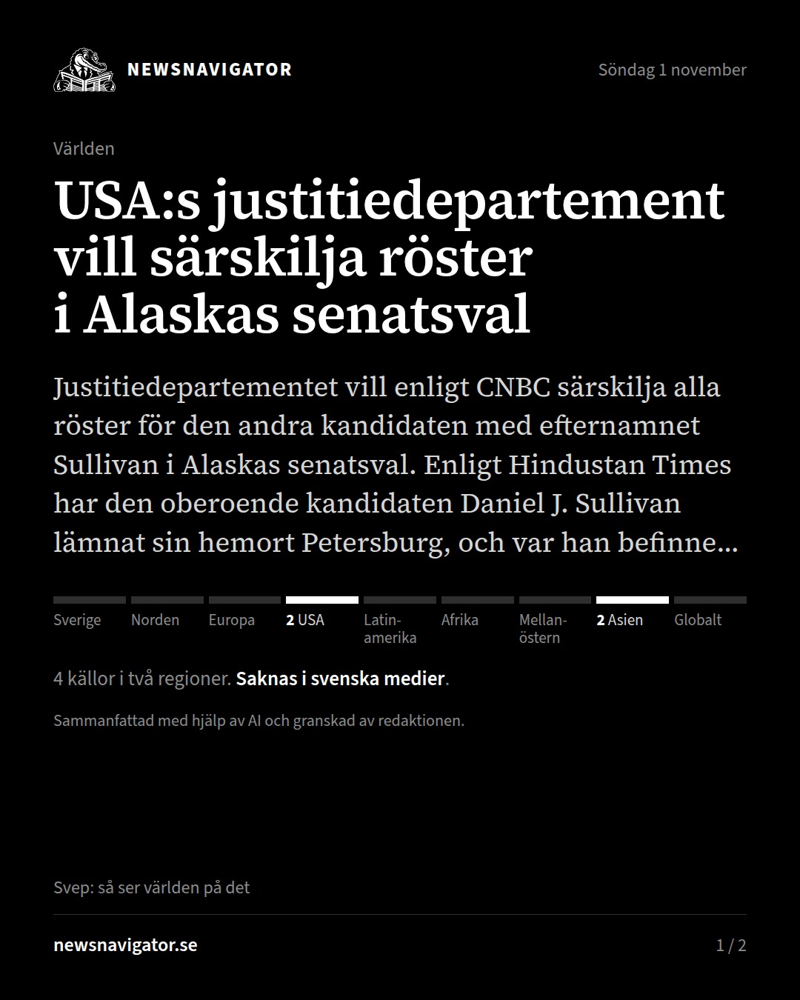
#26 · varlden · 4 källor · 2026-11-01 Kräver din genomgång: Saknas i svenska medier
USA:s justitiedepartement vill särskilja röster i Alaskas senatsval
Justitiedepartementet vill enligt CNBC särskilja alla röster för den andra kandidaten med efternamnet Sullivan i Alaskas senatsval. Enligt Hindustan Times har den oberoende kandidaten Daniel J. Sullivan lämnat sin hemort Petersburg, och var han befinner sig är oklart.
Caption
USA:s justitiedepartement vill särskilja röster i Alaskas senatsval
Justitiedepartementet vill enligt CNBC särskilja alla röster för den andra kandidaten med efternamnet Sullivan i Alaskas senatsval. Enligt Hindustan Times har den oberoende kandidaten Daniel J. Sullivan lämnat sin hemort Petersburg, och var han befinner sig är oklart.
Så ser världen på det: Indiska Hindustan Times lyfter Daniel J. Sullivans vistelse och skriver att han enligt uppgift lämnat Petersburg och att var han befinner sig är okänt. Amerikanska NPR lyfter uppgifter, som NPR tillskriver The New York Times, om att demokrater rekryterat en så kallad spoiler-kandidat, samt att justitiedepartementet vill isolera röster i Alaska. Singaporianska The Straits Times lyfter att Trumpadministrationen skärpt den kriminella utredningen och att den tillför osäkerhet inför midtermsvalet den 3 november. Amerikanska CNBC lyfter att justitiedepartementet vill särskilja alla röster för den andra kandidaten med namnet Sullivan och att valets utgång kan avgöra vilket parti som får majoriteten i senaten.
Källor: Hindustan Times, NPR, The Straits Times, CNBC
Hela notisen med alla länkar: https://newsnavigator.se/sv/n/3f49784029/
In English: US Justice Department moves to separate ballots in Alaska Senate race
Sammanfattad med hjälp av AI och granskad av redaktionen. Vi levererar nyheterna. Vad du gör av dem är upp till dig.
#nyheter #newsnavigator #omvärlden #utrikes #sammanhang #källor
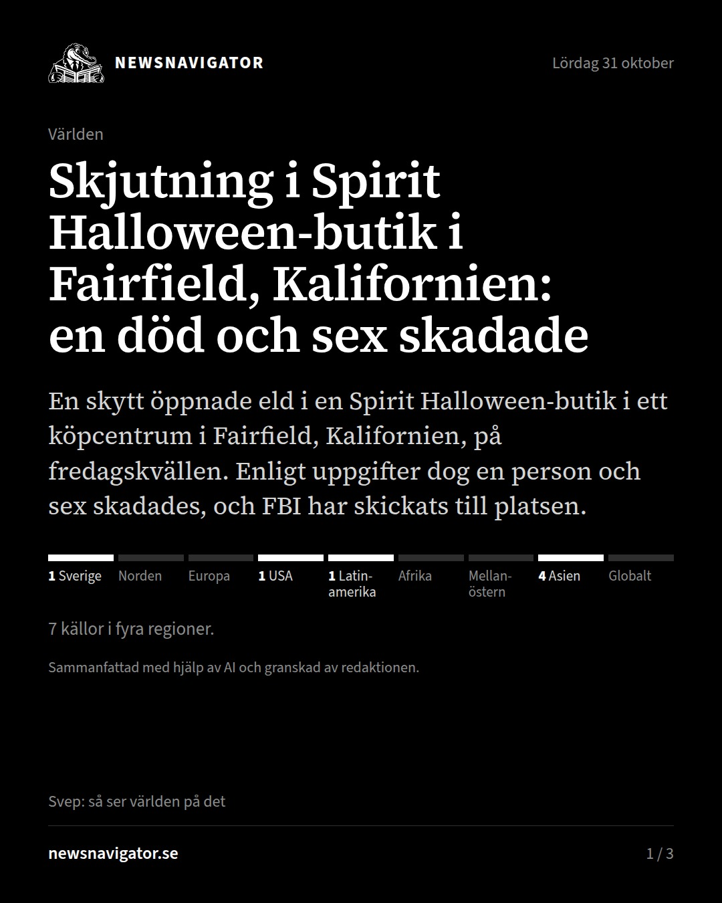
#27 · varlden · 7 källor · 2026-10-31
Skjutning i Spirit Halloween-butik i Fairfield, Kalifornien: en död och sex skadade
En skytt öppnade eld i en Spirit Halloween-butik i ett köpcentrum i Fairfield, Kalifornien, på fredagskvällen. Enligt uppgifter dog en person och sex skadades, och FBI har skickats till platsen.
Caption
Skjutning i Spirit Halloween-butik i Fairfield, Kalifornien: en död och sex skadade
En skytt öppnade eld i en Spirit Halloween-butik i ett köpcentrum i Fairfield, Kalifornien, på fredagskvällen. Enligt uppgifter dog en person och sex skadades, och FBI har skickats till platsen.
Så ser världen på det: Amerikanska New York Post lyfter FBI:s insats i rubriken. Colombianska El Tiempo lyfter att den misstänkta skytten är på fri fot och att tre av de skadade är i kritiskt tillstånd. Pakistanska Dawn lyfter polisens uppgifter om att gärningsmannen inte var identifierad och tidpunkten för skjutningen. Singaporianska CNA lyfter att skjutningen skedde timmar före Halloween, och The Straits Times lyfter att minst tre personer är i kritiskt tillstånd enligt en polisföreträdare. Indiska Hindustan Times lyfter att polisen bekräftat att minst sju personer blev skjutna och att offren hittades på tre platser.
Källorna skiljer sig åt: El Tiempo uppger att den misstänkta skytten är på fri fot. Dawn skriver att polisen ännu inte hade identifierat den ansvariga. Hindustan Times uppger att offren hittades på tre olika platser, medan övriga källor inte nämner detta.
Källor: New York Post, Expressen Nöje, El Tiempo, Dawn, CNA, The Straits Times, Hindustan Times
Hela notisen med alla länkar: https://newsnavigator.se/sv/n/dd7326e914/
In English: Shooting at Spirit Halloween store in Fairfield, California leaves one dead and six injured
Sammanfattad med hjälp av AI och granskad av redaktionen. Vi levererar nyheterna. Vad du gör av dem är upp till dig.
#nyheter #newsnavigator #omvärlden #utrikes #sammanhang #källor
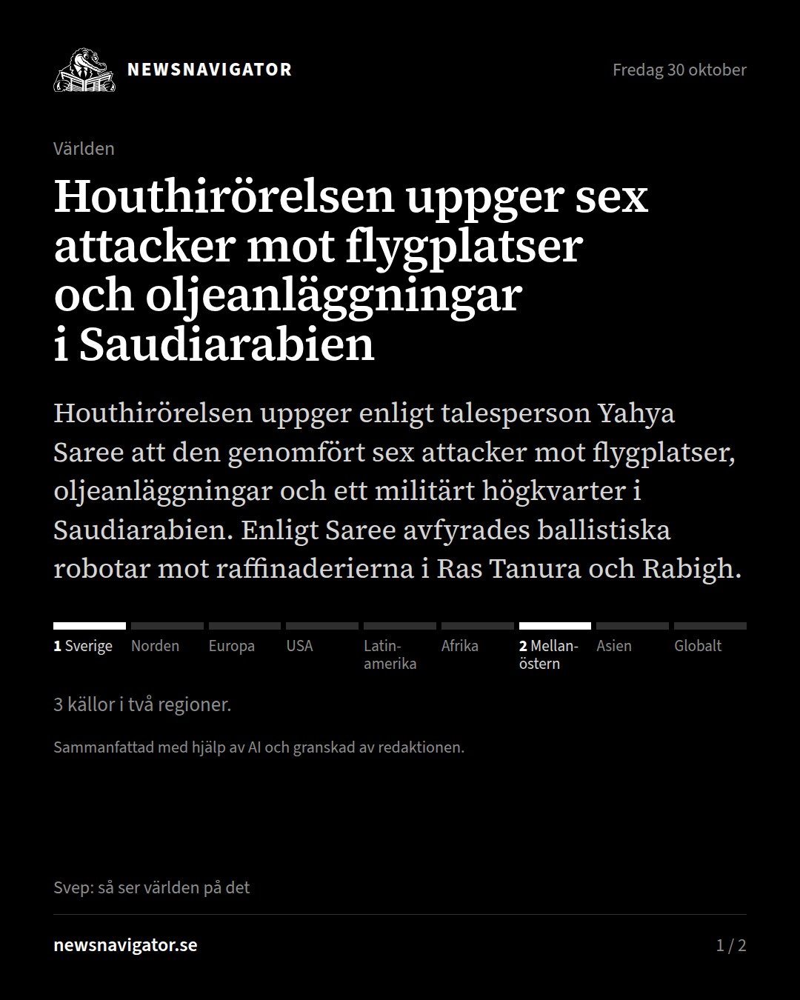
#28 · varlden · 3 källor · 2026-10-30
Houthirörelsen uppger sex attacker mot flygplatser och oljeanläggningar i Saudiarabien
Houthirörelsen uppger enligt talesperson Yahya Saree att den genomfört sex attacker mot flygplatser, oljeanläggningar och ett militärt högkvarter i Saudiarabien. Enligt Saree avfyrades ballistiska robotar mot raffinaderierna i Ras Tanura och Rabigh.
Caption
Houthirörelsen uppger sex attacker mot flygplatser och oljeanläggningar i Saudiarabien
Houthirörelsen uppger enligt talesperson Yahya Saree att den genomfört sex attacker mot flygplatser, oljeanläggningar och ett militärt högkvarter i Saudiarabien. Enligt Saree avfyrades ballistiska robotar mot raffinaderierna i Ras Tanura och Rabigh.
Så ser världen på det: Al Jazeera (Qatar) lyfter fram attackerna mot flygplatser och oljeanläggningar samt samtal mellan Iran och Mecka-pakten i Teheran tidigare i veckan. Middle East Eye (Storbritannien) lyfter fram talespersonen Yahya Saree och uppgiften om ballistiska robotar mot raffinaderierna i Ras Tanura och Rabigh.
Källor: Sveriges Radio Ekot, Al Jazeera, Middle East Eye
Hela notisen med alla länkar: https://newsnavigator.se/sv/n/ab4217a652/
In English: Houthis claim six attacks on Saudi airports and oil facilities
Sammanfattad med hjälp av AI och granskad av redaktionen. Vi levererar nyheterna. Vad du gör av dem är upp till dig.
#nyheter #newsnavigator #omvärlden #utrikes #sammanhang #källor
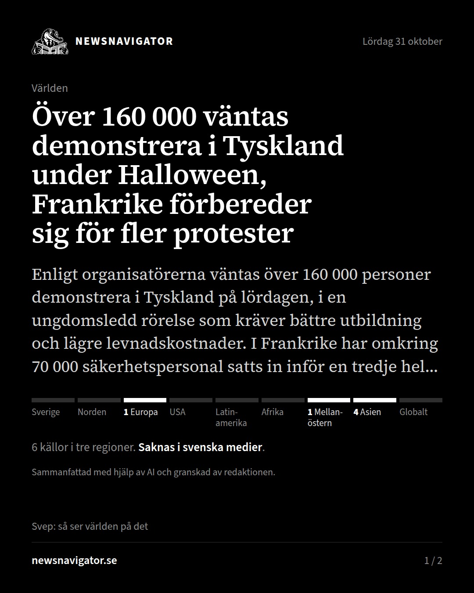
#29 · varlden · 6 källor · 2026-10-31 Kräver din genomgång: Saknas i svenska medier
Över 160 000 väntas demonstrera i Tyskland under Halloween, Frankrike förbereder sig för fler protester
Enligt organisatörerna väntas över 160 000 personer demonstrera i Tyskland på lördagen, i en ungdomsledd rörelse som kräver bättre utbildning och lägre levnadskostnader. I Frankrike har omkring 70 000 säkerhetspersonal satts in inför en tredje helg med protester.
Caption
Över 160 000 väntas demonstrera i Tyskland under Halloween, Frankrike förbereder sig för fler protester
Enligt organisatörerna väntas över 160 000 personer demonstrera i Tyskland på lördagen, i en ungdomsledd rörelse som kräver bättre utbildning och lägre levnadskostnader. I Frankrike har omkring 70 000 säkerhetspersonal satts in inför en tredje helg med protester.
Så ser världen på det: Franska France 24 och indiska The Hindu lyfter främst säkerhetsåtgärderna i Frankrike och rädslan för våld inför helgen, där France 24 nämner att upplopp kan döljas bakom maskerna. Pakistanska Dawn, singaporianska CNA och Straits Times lyfter i första hand de förväntade deltagarna i Tyskland. CNA beskriver dessutom butiker som bommats för skyltfönster i Frankrike. Straits Times nämner krav på att motsätta sig obligatorisk militärtjänst. Qatariska Al Jazeera beskriver en bredare våg av ungdomsprotester i Europa och lyfter stigande priser och bristande framtidsutsikter.
Källor: France 24, Dawn, The Hindu, CNA, Al Jazeera, The Straits Times
Hela notisen med alla länkar: https://newsnavigator.se/sv/n/e8e8378506/
In English: Over 160,000 expected at Halloween protests in Germany as France prepares for more unrest
Sammanfattad med hjälp av AI och granskad av redaktionen. Vi levererar nyheterna. Vad du gör av dem är upp till dig.
#nyheter #newsnavigator #omvärlden #utrikes #sammanhang #källor
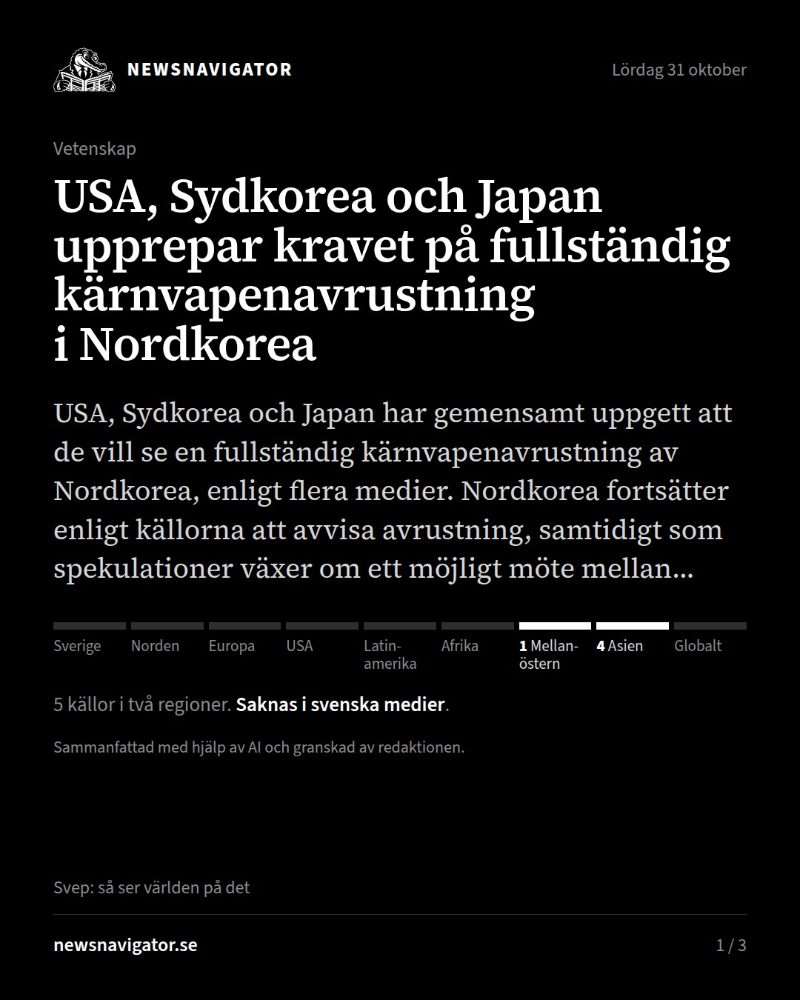
#30 · vetenskap · 5 källor · 2026-10-31 Kräver din genomgång: Saknas i svenska medier
USA, Sydkorea och Japan upprepar kravet på fullständig kärnvapenavrustning i Nordkorea
USA, Sydkorea och Japan har gemensamt uppgett att de vill se en fullständig kärnvapenavrustning av Nordkorea, enligt flera medier. Nordkorea fortsätter enligt källorna att avvisa avrustning, samtidigt som spekulationer växer om ett möjligt möte mellan Donald Trump och Kim Jong Un.
Caption
USA, Sydkorea och Japan upprepar kravet på fullständig kärnvapenavrustning i Nordkorea
USA, Sydkorea och Japan har gemensamt uppgett att de vill se en fullständig kärnvapenavrustning av Nordkorea, enligt flera medier. Nordkorea fortsätter enligt källorna att avvisa avrustning, samtidigt som spekulationer växer om ett möjligt möte mellan Donald Trump och Kim Jong Un.
Så ser världen på det: Rubrikerna är i stort sett likartade och handlar om den gemensamma kraven på Nordkorea. Skillnaderna syns främst i ingresserna: Al Jazeera (Qatar) och The Hindu (Indien) lyfter Trumps önskan om ett möte med Kim Jong Un. South China Morning Post (Hongkong) lyfter spekulationer kring ett möte, medan The Japan Times (Japan) lyfter att Pyongyang fortsätter att avvisa nedrustning. CNA (Singapore) lyfter även åtagandet om full implementering av FN:s säkerhetsrådsresolutioner.
Källorna skiljer sig åt: Al Jazeera skriver att Trump söker ett nytt möte med Kim Jong Un. South China Morning Post beskriver att spekulationerna växer, och The Japan Times talar om möjliga samtal med Washington. The Hindu anger att ett möte kan äga rum vid APEC-toppmötet i Kina nästa månad.
Källor: Al Jazeera, South China Morning Post, The Japan Times, CNA, The Hindu
Hela notisen med alla länkar: https://newsnavigator.se/sv/n/711beff1db/
In English: US, South Korea and Japan reaffirm call for full North Korea denuclearisation
Sammanfattad med hjälp av AI och granskad av redaktionen. Vi levererar nyheterna. Vad du gör av dem är upp till dig.
#nyheter #newsnavigator #vetenskap #forskning #sammanhang #källor
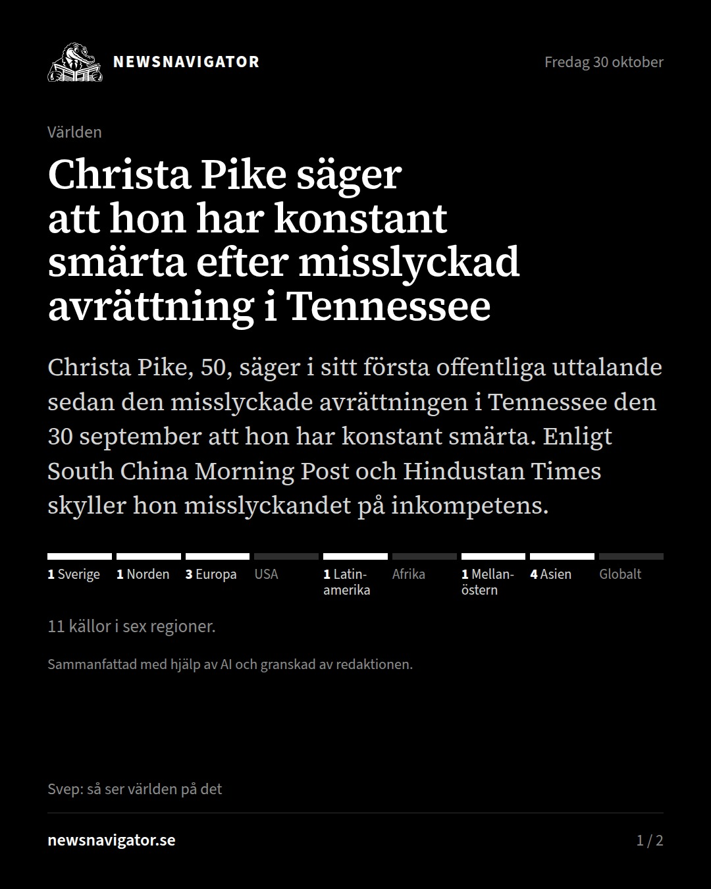
#31 · varlden · 11 källor · 2026-10-30
Christa Pike säger att hon har ständiga smärtor efter misslyckad avrättning
Christa Pike, 50, säger i sitt första offentliga uttalande sedan den misslyckade avrättningen i Tennessee den 30 september att hon har konstant smärta. Enligt South China Morning Post och Hindustan Times skyller hon misslyckandet på inkompetens.
Caption
Christa Pike säger att hon har konstant smärta efter misslyckad avrättning i Tennessee
Christa Pike, 50, säger i sitt första offentliga uttalande sedan den misslyckade avrättningen i Tennessee den 30 september att hon har konstant smärta. Enligt South China Morning Post och Hindustan Times skyller hon misslyckandet på inkompetens.
Så ser världen på det: Rubrikerna lyfter fram olika delar av Pikes uttalande. Al Jazeera (Qatar), The Straits Times (Singapore), The Hindu (Indien), NRK (Norge), Dagens Nyheter (Sverige) och Le Monde (Frankrike) har smärtan som huvudbudskap i rubriken. South China Morning Post (Hongkong) och Hindustan Times (Indien) lyfter i rubriken hennes påstående om inkompetens. El País (Spanien) citerar i rubriken hennes ord om smärta i kropp och själ. BBC World (Storbritannien) lyfter att hon vaknade förvirrad och i smärta. Deutsche Welle (Tyskland) lyfter smärtan i rubriken och tar i ingressen upp advokaternas begäran om livstid och guvernörens utredning.
Källor: Al Jazeera, The Straits Times, BBC World, Deutsche Welle, South China Morning Post, The Hindu, El País América, Hindustan Times och 3 till
Hela notisen med alla länkar: https://newsnavigator.se/sv/n/4414e6a1a8/
In English: Christa Pike says she is in constant pain after failed Tennessee execution
Sammanfattad med hjälp av AI och granskad av redaktionen. Vi levererar nyheterna. Vad du gör av dem är upp till dig.
#nyheter #newsnavigator #omvärlden #utrikes #sammanhang #källor
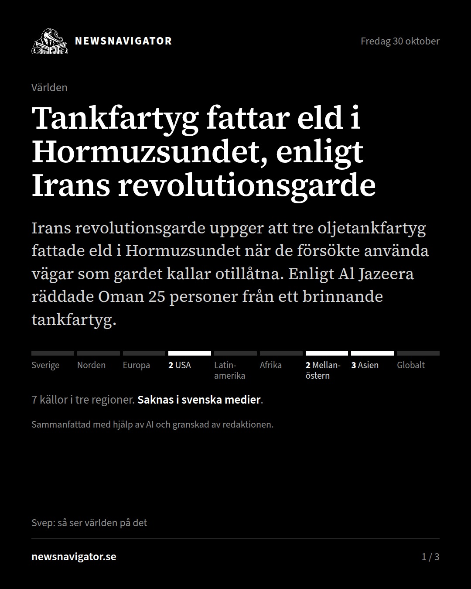
#32 · varlden · 7 källor · 2026-10-30 Kräver din genomgång: Saknas i svenska medier
Tankfartyg fattar eld i Hormuzsundet, enligt Irans revolutionsgarde
Irans revolutionsgarde uppger att tre oljetankfartyg fattade eld i Hormuzsundet när de försökte använda vägar som gardet kallar otillåtna. Enligt Al Jazeera räddade Oman 25 personer från ett brinnande tankfartyg.
Caption
Tankfartyg fattar eld i Hormuzsundet, enligt Irans revolutionsgarde
Irans revolutionsgarde uppger att tre oljetankfartyg fattade eld i Hormuzsundet när de försökte använda vägar som gardet kallar otillåtna. Enligt Al Jazeera räddade Oman 25 personer från ett brinnande tankfartyg.
Så ser världen på det: Singaporekällorna lyfter olika saker: CNA lyfter att oljepriserna är på väg mot en fjärde månad i rad med uppgång, medan The Straits Times återger revolutionsgardets uttalande. Qatariska Al Jazeera lyfter Omans räddningsinsats. Amerikanska källor lyfter olika delar: CNBC lyfter att tankfartyg trotsar en kraftig upptrappning av iranska angrepp och att höga fraktpriser ger ekonomiska incitament, medan WSJ lyfter att oljepriserna stiger efter incidenten i Hormuz och påståenden från houthierna. Indiska The Hindu lyfter den iranska uppgiften om minor och ignorerade varningar. Al-Monitor återger revolutionsgardets uttalande i samma form som The Straits Times.
Källorna skiljer sig åt: Källorna skiljer sig åt i antal fartyg och orsak. Enligt The Straits Times och Al-Monitor uppger revolutionsgardet att tre fartyg fattade eld och exploderade. The Hindu skriver att Iran uppger att fyra fartyg brann efter att ha träffat minor, och att fartygen stängt av radar och navigationssystem och ignorerat varningar. Al Jazeera skriver att Iran sagt att tre tankfartyg stoppades när de försökte använda otillåtna rutter.
Källor: CNA, Al Jazeera, CNBC, The Straits Times, Al-Monitor, The Hindu, The Wall Street Journal
Hela notisen med alla länkar: https://newsnavigator.se/sv/n/ef76214cc6/
In English: Tankers catch fire in Strait of Hormuz, Iran's Revolutionary Guards say
Sammanfattad med hjälp av AI och granskad av redaktionen. Vi levererar nyheterna. Vad du gör av dem är upp till dig.
#nyheter #newsnavigator #omvärlden #utrikes #sammanhang #källor
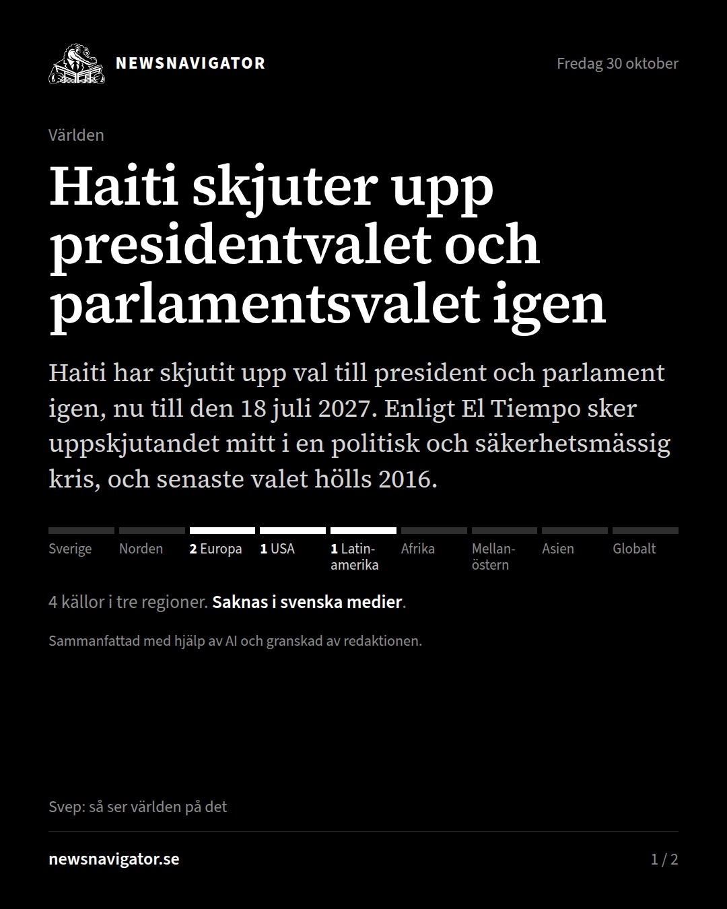
#33 · varlden · 4 källor · 2026-10-30 Kräver din genomgång: Saknas i svenska medier
Haiti skjuter upp presidentvalet och parlamentsvalet igen
Haiti har skjutit upp val till president och parlament igen, nu till den 18 juli 2027. Enligt El Tiempo sker uppskjutandet mitt i en politisk och säkerhetsmässig kris, och senaste valet hölls 2016.
Caption
Haiti skjuter upp presidentvalet och parlamentsvalet igen
Haiti har skjutit upp val till president och parlament igen, nu till den 18 juli 2027. Enligt El Tiempo sker uppskjutandet mitt i en politisk och säkerhetsmässig kris, och senaste valet hölls 2016.
Så ser världen på det: Colombianska El Tiempo lyfter i rubriken den politiska och säkerhetsmässiga krisen och i ingressen valet 2016. Amerikanska The New York Times lyfter i rubriken gängvåldet som bakgrund till uppskjutandet.
Källor: El Tiempo, BBC World, Euractiv, The New York Times
Hela notisen med alla länkar: https://newsnavigator.se/sv/n/7d97624432/
In English: Haiti postpones presidential and legislative elections again
Sammanfattad med hjälp av AI och granskad av redaktionen. Vi levererar nyheterna. Vad du gör av dem är upp till dig.
#nyheter #newsnavigator #omvärlden #utrikes #sammanhang #källor
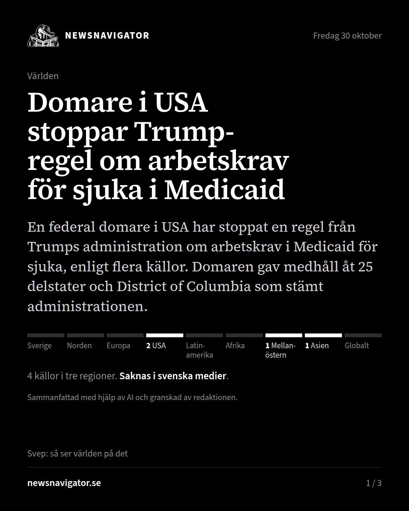
#34 · varlden · 4 källor · 2026-10-30 Kräver din genomgång: Saknas i svenska medier
Domare i USA stoppar Trump-regel om arbetskrav för sjuka i Medicaid
En federal domare i USA har stoppat en regel från Trumps administration om arbetskrav i Medicaid för sjuka, enligt flera källor. Domaren gav medhåll åt 25 delstater och District of Columbia som stämt administrationen.
Caption
Domare i USA stoppar Trump-regel om arbetskrav för sjuka i Medicaid
En federal domare i USA har stoppat en regel från Trumps administration om arbetskrav i Medicaid för sjuka, enligt flera källor. Domaren gav medhåll åt 25 delstater och District of Columbia som stämt administrationen.
Så ser världen på det: Källorna från olika länder lyfter olika delar. Al Jazeera (Qatar) lyfter att regeln kräver att sjuka bevisar nedsatt funktionsförmåga och vilka parter som stämt. Hindustan Times (Indien) återger beslutet i en rubrik som använder ordet frailty. Washington Examiner (USA) lyfter domarens utnämning och att stämningen kommer från delstater med demokratiskt ledarskap. The New York Times (USA) lyfter i rubriken domstolen och regeln som strikt.
Källorna skiljer sig åt: Källorna beskriver regeln med olika begrepp. Al Jazeera skriver att sjuka måste bevisa nedsatt funktionsförmåga, Hindustan Times att de måste bevisa frailty och Washington Examiner beskriver en definition av 'medically frail'.
Källor: Al Jazeera, Washington Examiner, Hindustan Times, The New York Times
Hela notisen med alla länkar: https://newsnavigator.se/sv/n/3d45ae69be/
In English: US judge blocks Trump Medicaid rule on work requirements for ill people
Sammanfattad med hjälp av AI och granskad av redaktionen. Vi levererar nyheterna. Vad du gör av dem är upp till dig.
#nyheter #newsnavigator #omvärlden #utrikes #sammanhang #källor
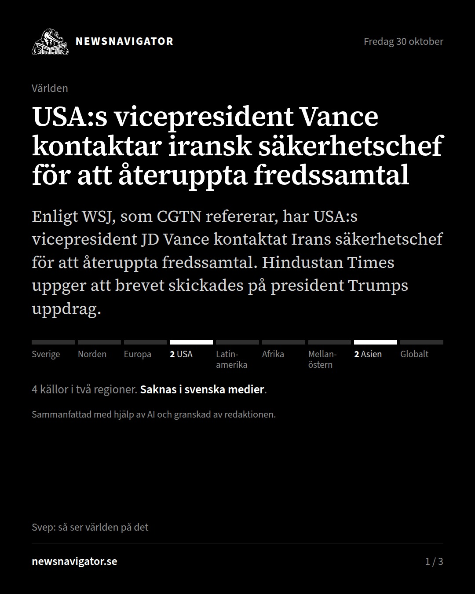
#35 · varlden · 4 källor · 2026-10-30 Kräver din genomgång: Saknas i svenska medier
USA:s vicepresident Vance kontaktar iransk säkerhetschef för att återuppta fredssamtal
Enligt WSJ, som CGTN refererar, har USA:s vicepresident JD Vance kontaktat Irans säkerhetschef för att återuppta fredssamtal. Hindustan Times uppger att brevet skickades på president Trumps uppdrag.
Caption
USA:s vicepresident Vance kontaktar iransk säkerhetschef för att återuppta fredssamtal
Enligt WSJ, som CGTN refererar, har USA:s vicepresident JD Vance kontaktat Irans säkerhetschef för att återuppta fredssamtal. Hindustan Times uppger att brevet skickades på president Trumps uppdrag.
Så ser världen på det: Rubrikerna lyfter olika saker. Hindustan Times (Indien) och Wall Street Journal (USA) lyfter att Vance når ut till en iransk hardliner, och Hindustan Times lyfter också att det sker på Trumps uppdrag. The New York Times (USA) lyfter att Vance föreslår att fredssamtalen återupptas. CGTN (Kina, statskontrollerat medium) lyfter, enligt WSJ, att kontakten kan avvärja en ny amerikansk attack mot Iran.
Källorna skiljer sig åt: Hindustan Times och Wall Street Journal kallar den iranske mottagaren för en hardliner (hard-liner) i rubriken. NYT:s rubrik och CGTN:s ingress använder inte den beskrivningen. NYT skriver att Vance föreslår att samtalen återupptas, medan WSJ och Hindustan Times skriver att Vance når ut till den iranske företrädaren.
Källor: Hindustan Times, The New York Times, The Wall Street Journal, CGTN (statskontrollerat)
Hela notisen med alla länkar: https://newsnavigator.se/sv/n/62a0c9e5cd/
In English: US Vice President Vance contacts Iranian security chief to restart peace talks
Sammanfattad med hjälp av AI och granskad av redaktionen. Vi levererar nyheterna. Vad du gör av dem är upp till dig.
#nyheter #newsnavigator #omvärlden #utrikes #sammanhang #källor
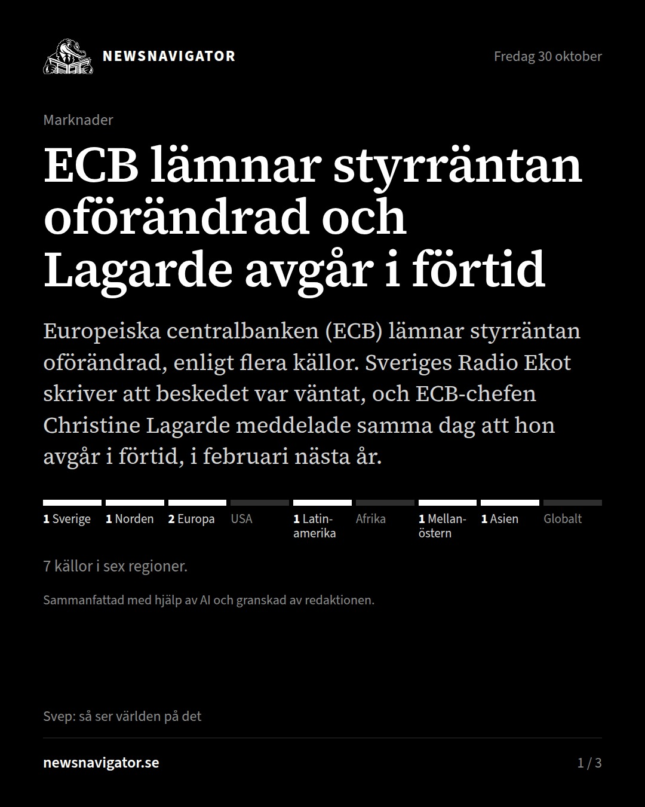
#36 · marknader · 7 källor · 2026-10-30
ECB lämnar styrräntan oförändrad och Lagarde avgår i förtid
Europeiska centralbanken (ECB) lämnar styrräntan oförändrad, enligt flera källor. Sveriges Radio Ekot skriver att beskedet var väntat, och ECB-chefen Christine Lagarde meddelade samma dag att hon avgår i förtid, i februari nästa år.
Caption
ECB lämnar styrräntan oförändrad och Lagarde avgår i förtid
Europeiska centralbanken (ECB) lämnar styrräntan oförändrad, enligt flera källor. Sveriges Radio Ekot skriver att beskedet var väntat, och ECB-chefen Christine Lagarde meddelade samma dag att hon avgår i förtid, i februari nästa år.
Så ser världen på det: Spanska El País América lyfter att beslutet var delat, att banken har diskuterat en räntehöjning, och nämner energihotet, uppgången i obligationsräntorna och risken för tillväxten. Svenska Sveriges Radio Ekot lyfter att beskedet var väntat och i linje med analytikers snittprognos enligt Bloomberg. Belgiska Euractiv och danska DR Nyheder lyfter främst att räntan hålls, där Euractiv kopplar det till Lagardes besked om att avgå i förtid.
Källorna skiljer sig åt: Euractiv anger att räntan är 2,5 procent, medan Sveriges Radio Ekot anger 2,65 procent. Källorna är inte överens om nivån på styrräntan.
Källor: DR Nyheder, Euractiv, Sveriges Radio Ekot, El País América, The Hindu, El País (English), The National (statskontrollerat)
Hela notisen med alla länkar: https://newsnavigator.se/sv/n/f7dfa48bac/
In English: ECB keeps interest rates unchanged and Lagarde to step down early
Sammanfattad med hjälp av AI och granskad av redaktionen. Vi levererar nyheterna. Vad du gör av dem är upp till dig.
#nyheter #newsnavigator #ekonomi #marknader #börsen #sammanhang #källor
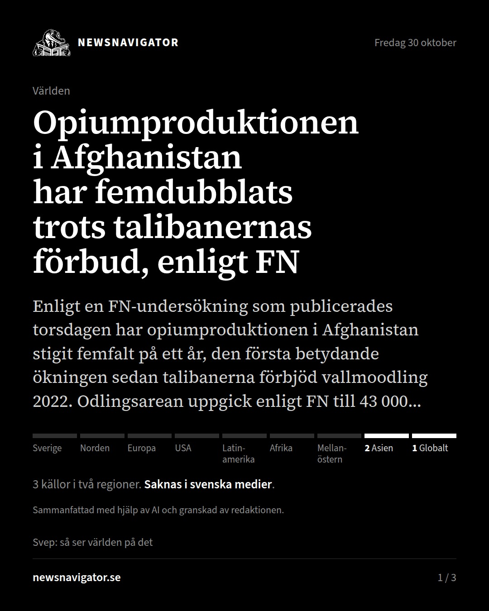
#37 · varlden · 3 källor · 2026-10-30 Kräver din genomgång: Saknas i svenska medier
Opiumproduktionen i Afghanistan har femdubblats trots talibanernas förbud, enligt FN
Enligt en FN-undersökning som publicerades torsdagen har opiumproduktionen i Afghanistan stigit femfalt på ett år, den första betydande ökningen sedan talibanerna förbjöd vallmoodling 2022. Odlingsarean uppgick enligt FN till 43 000 hektar, mot 10 000 hektar 2025.
Caption
Opiumproduktionen i Afghanistan har femdubblats trots talibanernas förbud, enligt FN
Enligt en FN-undersökning som publicerades torsdagen har opiumproduktionen i Afghanistan stigit femfalt på ett år, den första betydande ökningen sedan talibanerna förbjöd vallmoodling 2022. Odlingsarean uppgick enligt FN till 43 000 hektar, mot 10 000 hektar 2025.
Så ser världen på det: Källorna kommer från FN (internationell organisation), Pakistan (Dawn) och Indien (The Hindu). UN News lyfter i rubriken att produktionen har femdubblats och att odlare hittar sätt att kringgå förbudet. Dawn och The Hindu lyfter i rubrikerna att odlingen ökar trots talibanstyrets förbud. The Hindu lägger i ingressen tonvikten på förbudet 2022 och hur den odlade arealen då minskade.
Källorna skiljer sig åt: UN News anger att produktionen har femdubblats på ett år. Dawn anger att odlingsarean mer än fyrdubblades 2026 och uppger 43 000 hektar mot 10 000 hektar 2025. Måtten skiljer sig åt: produktion i den ena källan och odlad areal i den andra. The Hindu anger att arealen 2022 minskade från över 200 000 hektar till 10 000 hektar 2025.
Källor: UN News, Dawn, The Hindu
Hela notisen med alla länkar: https://newsnavigator.se/sv/n/a9b85f4805/
In English: Opium production in Afghanistan up fivefold despite Taliban ban, UN says
Sammanfattad med hjälp av AI och granskad av redaktionen. Vi levererar nyheterna. Vad du gör av dem är upp till dig.
#nyheter #newsnavigator #omvärlden #utrikes #sammanhang #källor
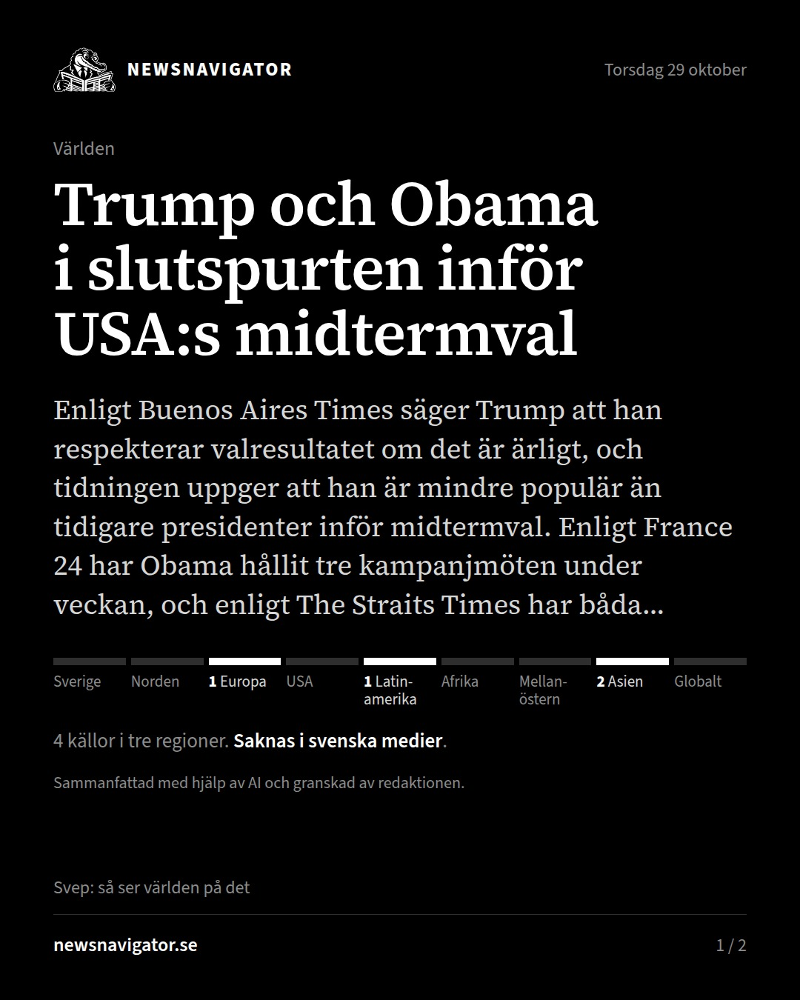
#38 · varlden · 4 källor · 2026-10-29 Kräver din genomgång: Saknas i svenska medier
Trump och Obama i slutspurten inför USA:s midtermval
Enligt Buenos Aires Times säger Trump att han respekterar valresultatet om det är ärligt, och tidningen uppger att han är mindre populär än tidigare presidenter inför midtermval. Enligt France 24 har Obama hållit tre kampanjmöten under veckan, och enligt The Straits Times har båda ledarna framträdande roller i valrörelsen.
Caption
Trump och Obama i slutspurten inför USA:s midtermval
Enligt Buenos Aires Times säger Trump att han respekterar valresultatet om det är ärligt, och tidningen uppger att han är mindre populär än tidigare presidenter inför midtermval. Enligt France 24 har Obama hållit tre kampanjmöten under veckan, och enligt The Straits Times har båda ledarna framträdande roller i valrörelsen.
Så ser världen på det: Argentinska Buenos Aires Times lyfter Trumps uttalande om valresultatet och opinionssiffrorna. Franska France 24 lyfter Obamas kampanjinsatser för demokraterna. Pakistanska Dawn lyfter Obamas kommentar om Vita husets reaktion på en tidigare uttalad jämförelse. Singaporianska The Straits Times beskriver båda ledarnas roller och att de utbytt påhopp i valrörelsen.
Källor: Buenos Aires Times, France 24, Dawn, The Straits Times
Hela notisen med alla länkar: https://newsnavigator.se/sv/n/d3d258dca5/
In English: Trump and Obama in final stretch before US midterm elections
Sammanfattad med hjälp av AI och granskad av redaktionen. Vi levererar nyheterna. Vad du gör av dem är upp till dig.
#nyheter #newsnavigator #omvärlden #utrikes #sammanhang #källor
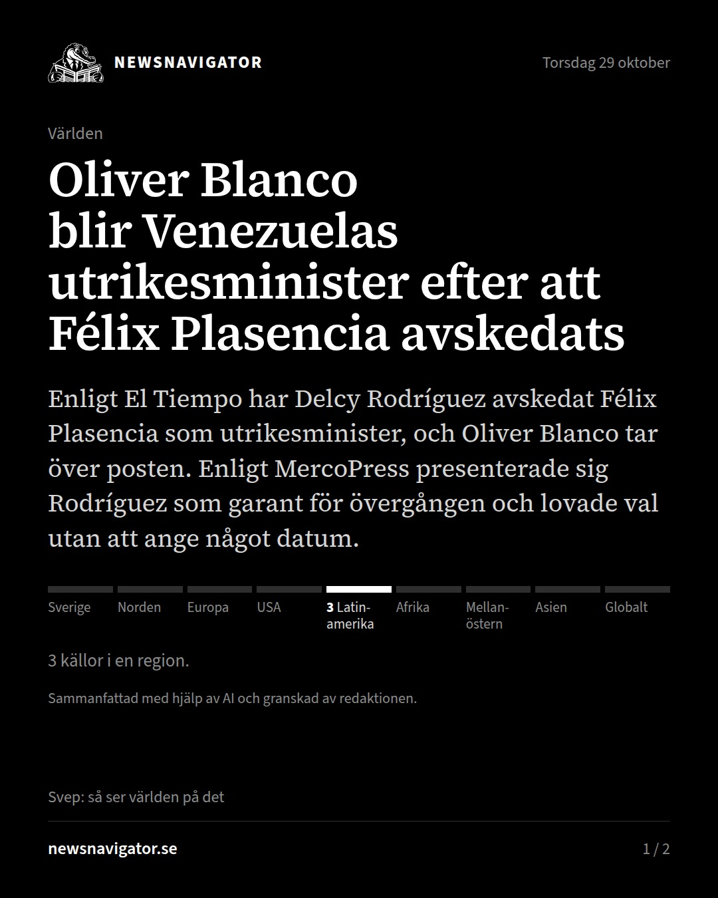
#39 · varlden · 3 källor · 2026-10-29
Delcy Rodríguez lovar val i Venezuela utan angivet datum
Enligt El Tiempo har Delcy Rodríguez avskedat Félix Plasencia som utrikesminister, och Oliver Blanco tar över posten. Enligt MercoPress presenterade sig Rodríguez som garant för övergången och lovade val utan att ange något datum.
Caption
Oliver Blanco blir Venezuelas utrikesminister efter att Félix Plasencia avskedats
Enligt El Tiempo har Delcy Rodríguez avskedat Félix Plasencia som utrikesminister, och Oliver Blanco tar över posten. Enligt MercoPress presenterade sig Rodríguez som garant för övergången och lovade val utan att ange något datum.
Källorna skiljer sig åt: Källorna beskriver Blancos bakgrund olika. El País lyfter att han kommer från oppositionen och beskriver honom som ung diplomat. El Tiempo nämner att han tidigare var viceminister för Europa och Nordamerika. Beskrivningarna står inte i direkt konflikt med varandra.
Källor: El País América, El Tiempo, MercoPress
Hela notisen med alla länkar: https://newsnavigator.se/sv/n/6d0537b3e2/
In English: Oliver Blanco to become Venezuela's foreign minister after Félix Plasencia is dismissed
Sammanfattad med hjälp av AI och granskad av redaktionen. Vi levererar nyheterna. Vad du gör av dem är upp till dig.
#nyheter #newsnavigator #omvärlden #utrikes #sammanhang #källor
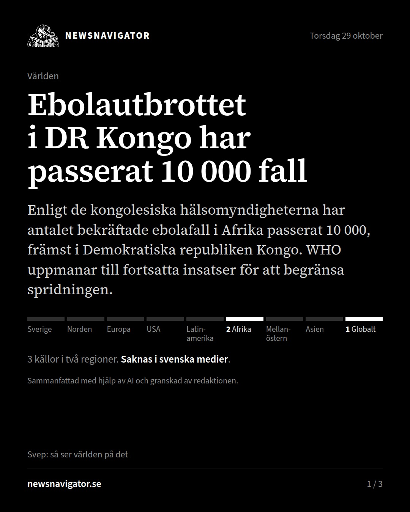
#40 · varlden · 3 källor · 2026-10-29 Kräver din genomgång: Saknas i svenska medier
Ebolautbrottet i DR Kongo har passerat 10 000 fall
Enligt de kongolesiska hälsomyndigheterna har antalet bekräftade ebolafall i Afrika passerat 10 000, främst i Demokratiska republiken Kongo. WHO uppmanar till fortsatta insatser för att begränsa spridningen.
Caption
Ebolautbrottet i DR Kongo har passerat 10 000 fall
Enligt de kongolesiska hälsomyndigheterna har antalet bekräftade ebolafall i Afrika passerat 10 000, främst i Demokratiska republiken Kongo. WHO uppmanar till fortsatta insatser för att begränsa spridningen.
Källorna skiljer sig åt: Africanews anger, med hänvisning till kongolesiska hälsomyndigheter, nästan 5 000 dödsfall. DW, återpublicerat av AllAfrica, anger nästan 4 900 dödsfall.
Källor: UN News, Africanews, AllAfrica
Hela notisen med alla länkar: https://newsnavigator.se/sv/n/67532b1a15/
In English: Ebola outbreak in DR Congo passes 10,000 cases
Sammanfattad med hjälp av AI och granskad av redaktionen. Vi levererar nyheterna. Vad du gör av dem är upp till dig.
#nyheter #newsnavigator #omvärlden #utrikes #sammanhang #källor
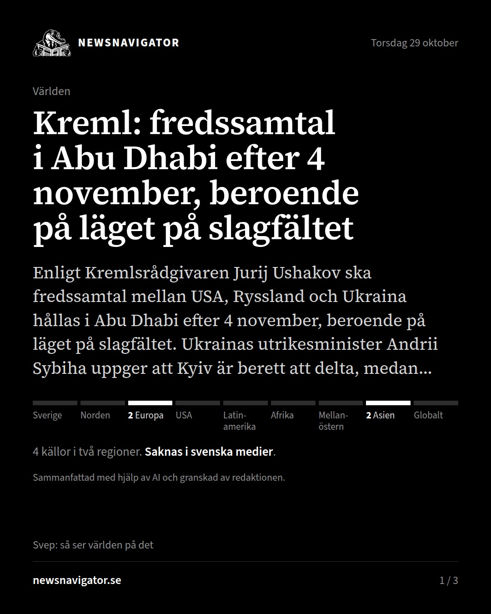
#41 · varlden · 4 källor · 2026-10-29 Kräver din genomgång: Saknas i svenska medier
Kreml: fredssamtal i Abu Dhabi efter 4 november, beroende på läget på slagfältet
Enligt Kremlsrådgivaren Jurij Ushakov ska fredssamtal mellan USA, Ryssland och Ukraina hållas i Abu Dhabi efter 4 november, beroende på läget på slagfältet. Ukrainas utrikesminister Andrii Sybiha uppger att Kyiv är berett att delta, medan striderna fortsätter.
Caption
Kreml: fredssamtal i Abu Dhabi efter 4 november, beroende på läget på slagfältet
Enligt Kremlsrådgivaren Jurij Ushakov ska fredssamtal mellan USA, Ryssland och Ukraina hållas i Abu Dhabi efter 4 november, beroende på läget på slagfältet. Ukrainas utrikesminister Andrii Sybiha uppger att Kyiv är berett att delta, medan striderna fortsätter.
Så ser världen på det: Kyiv Independent (Ukraina) lyfter i rubriken att Ryssland säger att slagfältssituationen avgör när samtalen inleds och nämner att Ushakov utesluter europeiskt deltagande. Meduza (Lettland) lyfter i rubriken Kremls uttalande om samtal efter 4 november. CGTN (kinesiska statsmedier) lyfter i rubriken att Ukraina och Ryssland förbereder trilaterala samtal samtidigt som striderna intensifieras, och i ingressen Ukrainas beredskap att delta.
Källorna skiljer sig åt: Kyiv Independent anger inget datum för när samtalen inleds. Meduza anger att de ska hållas efter 4 november. Källorna motsäger inte varandra.
Källor: The Straits Times, The Kyiv Independent, Meduza, CGTN (statskontrollerat)
Hela notisen med alla länkar: https://newsnavigator.se/sv/n/7dfb1bf83f/
In English: Kremlin says Abu Dhabi peace talks with US and Ukraine will follow November 4, depending on battlefield conditions
Sammanfattad med hjälp av AI och granskad av redaktionen. Vi levererar nyheterna. Vad du gör av dem är upp till dig.
#nyheter #newsnavigator #omvärlden #utrikes #sammanhang #källor
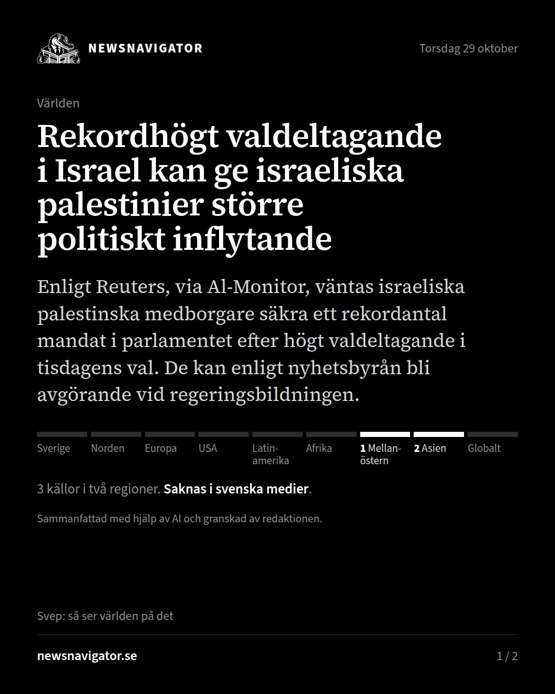
#42 · varlden · 3 källor · 2026-10-29 Kräver din genomgång: Saknas i svenska medier
Rekordhögt valdeltagande i Israel kan ge israeliska palestinier större politiskt inflytande
Enligt Reuters, via Al-Monitor, väntas israeliska palestinska medborgare säkra ett rekordantal mandat i parlamentet efter högt valdeltagande i tisdagens val. De kan enligt nyhetsbyrån bli avgörande vid regeringsbildningen.
Caption
Rekordhögt valdeltagande i Israel kan ge israeliska palestinier större politiskt inflytande
Enligt Reuters, via Al-Monitor, väntas israeliska palestinska medborgare säkra ett rekordantal mandat i parlamentet efter högt valdeltagande i tisdagens val. De kan enligt nyhetsbyrån bli avgörande vid regeringsbildningen.
Så ser världen på det: Al-Monitor (USA) och The Straits Times (Singapore) har i huvudsak samma rubrik och lyfter fram rekordvalsdeltagandet och de palestinska medborgarnas politiska inflytande. Straits Times ingress återger att de palestinska medborgarna enligt dem själva mobiliserats av regeringens politik, som de beskriver som rasistisk. The Hindu (Indien) har en annan rubrik, där valet framställs som en dom över Netanyahu, och ingressen lyfter oktober 7-attackens efterverkningar, flerfrontskrigen i regionen samt frågor om ansvar och säkerhet i kampanjen.
Källor: Al-Monitor, The Straits Times, The Hindu
Hela notisen med alla länkar: https://newsnavigator.se/sv/n/dda731ea51/
In English: Record turnout in Israel may give Palestinian citizens more political influence
Sammanfattad med hjälp av AI och granskad av redaktionen. Vi levererar nyheterna. Vad du gör av dem är upp till dig.
#nyheter #newsnavigator #omvärlden #utrikes #sammanhang #källor
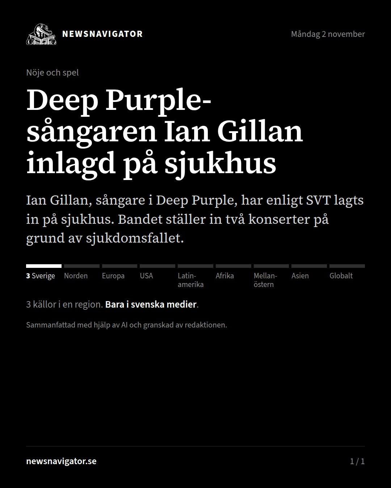
#43 · noje · 3 källor · 2026-11-02 Kräver din genomgång
Deep Purple-sångaren Ian Gillan inlagd på sjukhus
Ian Gillan, sångare i Deep Purple, har enligt SVT lagts in på sjukhus. Bandet ställer in två konserter på grund av sjukdomsfallet.
Caption
Deep Purple-sångaren Ian Gillan inlagd på sjukhus
Ian Gillan, sångare i Deep Purple, har enligt SVT lagts in på sjukhus. Bandet ställer in två konserter på grund av sjukdomsfallet.
Källor: Expressen Nöje, SVT Nyheter, Aftonbladet Nöjesbladet
Hela notisen med alla länkar: https://newsnavigator.se/sv/n/984ed872a8/
In English: Deep Purple singer Ian Gillan admitted to hospital
Sammanfattad med hjälp av AI och granskad av redaktionen. Vi levererar nyheterna. Vad du gör av dem är upp till dig.
#nyheter #newsnavigator #nöje #spel #kultur #sammanhang #källor
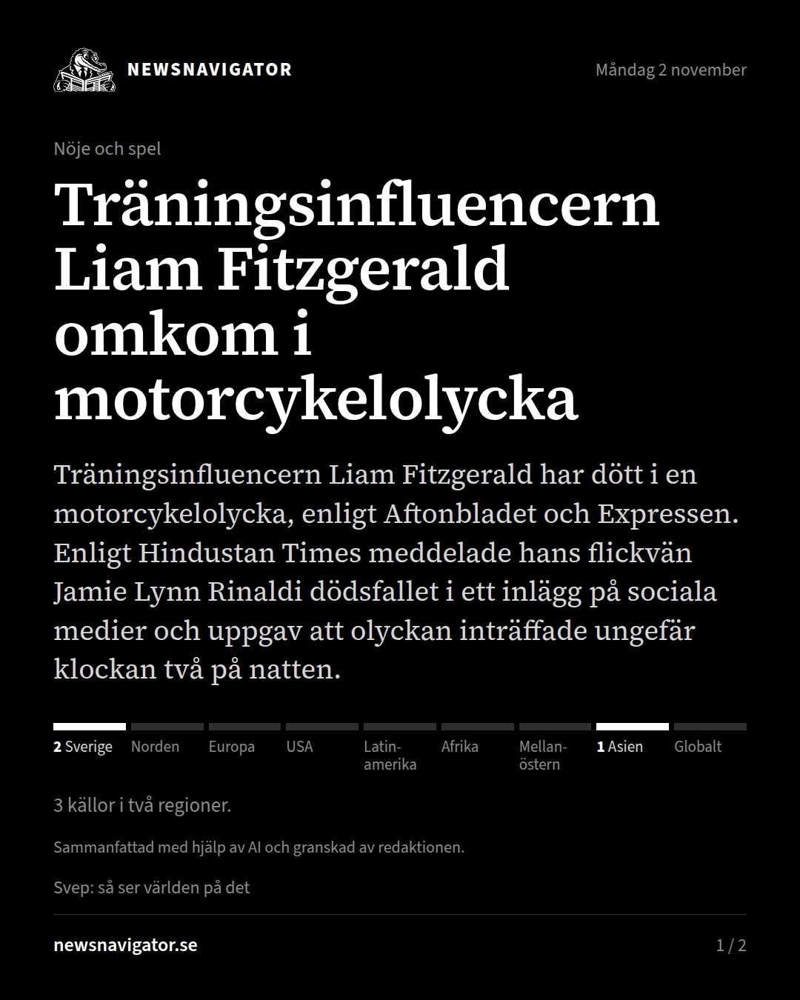
#44 · noje · 3 källor · 2026-11-02
Träningsinfluencern Liam Fitzgerald omkom i motorcykelolycka
Träningsinfluencern Liam Fitzgerald har dött i en motorcykelolycka, enligt Aftonbladet och Expressen. Enligt Hindustan Times meddelade hans flickvän Jamie Lynn Rinaldi dödsfallet i ett inlägg på sociala medier och uppgav att olyckan inträffade ungefär klockan två på natten.
Caption
Träningsinfluencern Liam Fitzgerald omkom i motorcykelolycka
Träningsinfluencern Liam Fitzgerald har dött i en motorcykelolycka, enligt Aftonbladet och Expressen. Enligt Hindustan Times meddelade hans flickvän Jamie Lynn Rinaldi dödsfallet i ett inlägg på sociala medier och uppgav att olyckan inträffade ungefär klockan två på natten.
Så ser världen på det: Svenska rubriker (Aftonbladet och Expressen) lyfter fram dödsfallet och att det skedde i en motorcykelolycka. Indiska Hindustan Times rubrik lyfter i stället att hyllningar strömmar in och beskriver Fitzgerald som fitness influencer.
Källor: Aftonbladet Nöjesbladet, Expressen Nöje, Hindustan Times
Hela notisen med alla länkar: https://newsnavigator.se/sv/n/41de69630e/
In English: Fitness influencer Liam Fitzgerald dies in motorcycle accident
Sammanfattad med hjälp av AI och granskad av redaktionen. Vi levererar nyheterna. Vad du gör av dem är upp till dig.
#nyheter #newsnavigator #nöje #spel #kultur #sammanhang #källor
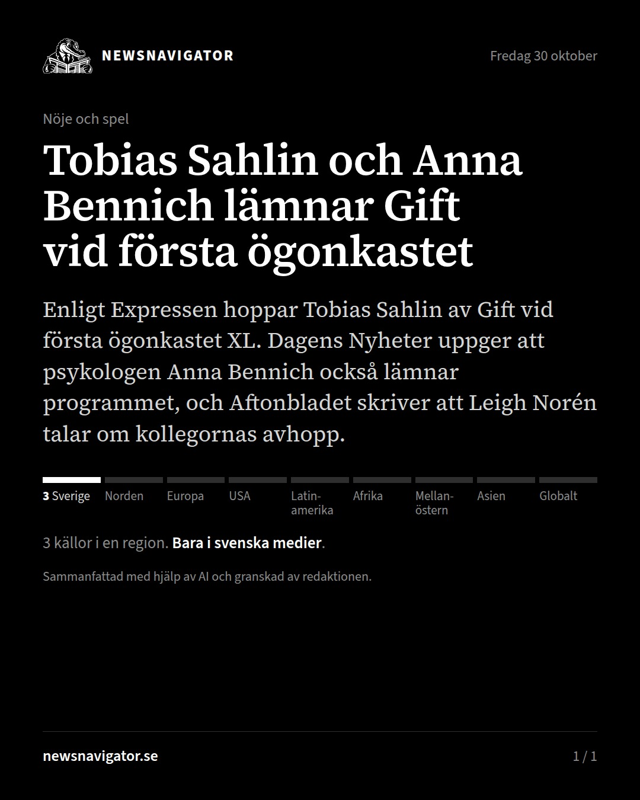
#45 · noje · 3 källor · 2026-10-30 Kräver din genomgång
Tobias Sahlin och Anna Bennich lämnar Gift vid första ögonkastet
Enligt Expressen hoppar Tobias Sahlin av Gift vid första ögonkastet XL. Dagens Nyheter uppger att psykologen Anna Bennich också lämnar programmet, och Aftonbladet skriver att Leigh Norén talar om kollegornas avhopp.
Caption
Tobias Sahlin och Anna Bennich lämnar Gift vid första ögonkastet
Enligt Expressen hoppar Tobias Sahlin av Gift vid första ögonkastet XL. Dagens Nyheter uppger att psykologen Anna Bennich också lämnar programmet, och Aftonbladet skriver att Leigh Norén talar om kollegornas avhopp.
Källor: Expressen Nöje, Aftonbladet Nöjesbladet, Dagens Nyheter
Hela notisen med alla länkar: https://newsnavigator.se/sv/n/8880d74051/
In English: Tobias Sahlin and Anna Bennich leave Married at First Sight
Sammanfattad med hjälp av AI och granskad av redaktionen. Vi levererar nyheterna. Vad du gör av dem är upp till dig.
#nyheter #newsnavigator #nöje #spel #kultur #sammanhang #källor
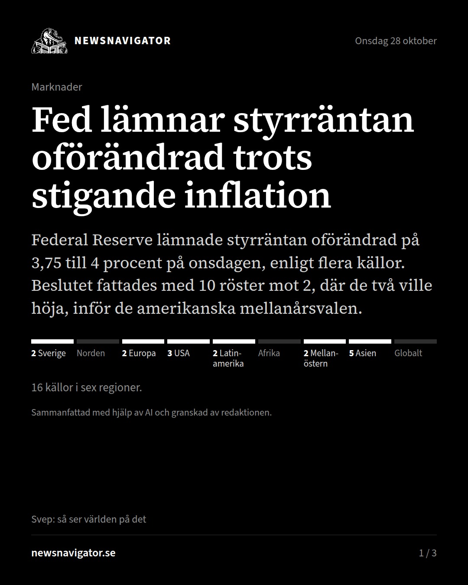
#46 · marknader · 16 källor · 2026-10-28
Fed lämnar styrräntan oförändrad trots stigande inflation
Federal Reserve lämnade styrräntan oförändrad på 3,75 till 4 procent på onsdagen, enligt flera källor. Beslutet fattades med 10 röster mot 2, där de två ville höja, inför de amerikanska mellanårsvalen.
Caption
Fed lämnar styrräntan oförändrad trots stigande inflation
Federal Reserve lämnade styrräntan oförändrad på 3,75 till 4 procent på onsdagen, enligt flera källor. Beslutet fattades med 10 röster mot 2, där de två ville höja, inför de amerikanska mellanårsvalen.
Så ser världen på det: Amerikanska källor lyfter räntemarknaden och valet: CNBC skriver att den tioåriga statsobligationsräntan stiger något, och The Daily Caller att beslutet är det sista före mellanårsvalen. The Hill lyfter Fed-chefen Kevin Warshs tal efter beslutet. Brittiska The Guardian lyfter Warshs uppgift att politiken inte spelade någon roll för pausen i räntehöjningarna. Indiska The Hindu och hongkongska South China Morning Post lyfter den kraftigt stigande inflationen. Statskontrollerade The National från Förenade Arabemiraten lyfter också inflationen. Sydkoreanska Yonhap och indiska Hindustan Times lyfter höjningen i september. Svenska Dagens industri lyfter att korta USA-räntor sjunker efter Fed-chefens uttalanden.
Källorna skiljer sig åt: Källorna är överens om beslutet och om att två ledamöter ville höja räntan. De beskriver inflationen olika: The Guardian skriver att den ligger över 3 procent, medan The Hindu och South China Morning Post skriver om kraftigt stigande inflation. Al Jazeera skriver att inflationen fortsätter att stiga.
Källor: CNBC, The Guardian, Al Jazeera, Hindustan Times, The Hindu, South China Morning Post, Yonhap, The Rio Times och 8 till
Hela notisen med alla länkar: https://newsnavigator.se/sv/n/9062242389/
In English: Fed leaves interest rates unchanged despite rising inflation
Sammanfattad med hjälp av AI och granskad av redaktionen. Vi levererar nyheterna. Vad du gör av dem är upp till dig.
#nyheter #newsnavigator #ekonomi #marknader #börsen #sammanhang #källor
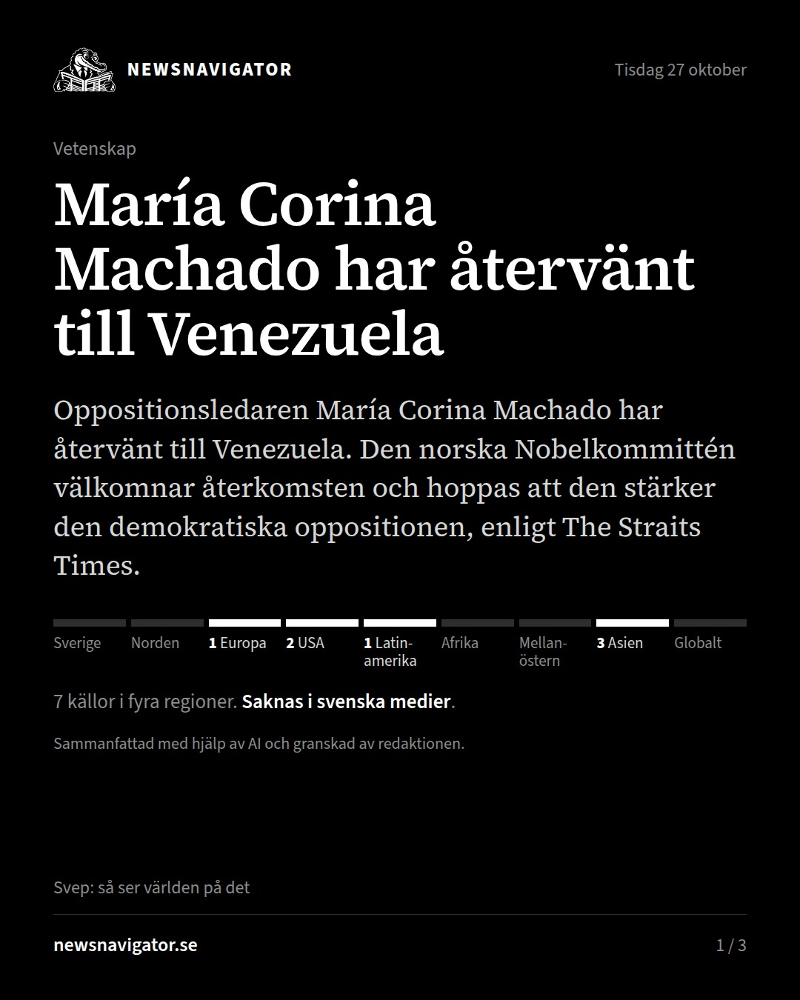
#47 · vetenskap · 7 källor · 2026-10-27 Kräver din genomgång: Saknas i svenska medier
María Corina Machado har återvänt till Venezuela
Oppositionsledaren María Corina Machado har återvänt till Venezuela. Den norska Nobelkommittén välkomnar återkomsten och hoppas att den stärker den demokratiska oppositionen, enligt The Straits Times.
Caption
María Corina Machado har återvänt till Venezuela
Oppositionsledaren María Corina Machado har återvänt till Venezuela. Den norska Nobelkommittén välkomnar återkomsten och hoppas att den stärker den demokratiska oppositionen, enligt The Straits Times.
Så ser världen på det: Indiska och singaporiska källor lyfter Nobelkommitténs reaktion. The Hindu skriver att kommittén säger att Venezuela behöver demokratisk förändring trots återkomsten, medan The Straits Times skriver att kommittén välkomnar den. Spanska El País lyfter USA:s roll i återresan enligt Marco Rubio. Franska Le Monde skriver att återkomsten ger ny energi åt oppositionen. Amerikanska The New York Times lyfter gränserna för USA:s inflytande. Hindustan Times och The Wall Street Journal har samma rubrik och lyfter vad återkomsten innebär för Venezuela. Hindustan Times skriver att Machado vill väcka en politisk rörelse och övertyga Washington om att landet behöver en regeringsändring.
Källorna skiljer sig åt: Källorna beskriver USA:s roll olika. Enligt El País säger USA:s utrikesminister Marco Rubio att USA förhandlade fram återresan för flera veckor sedan, medan The New York Times i sin rubrik lyfter gränserna för USA:s inflytande.
Källor: The Hindu, The Straits Times, Hindustan Times, El País América, The New York Times, Le Monde (English), The Wall Street Journal
Hela notisen med alla länkar: https://newsnavigator.se/sv/n/826230de4c/
In English: Maria Corina Machado has returned to Venezuela
Sammanfattad med hjälp av AI och granskad av redaktionen. Vi levererar nyheterna. Vad du gör av dem är upp till dig.
#nyheter #newsnavigator #vetenskap #forskning #sammanhang #källor
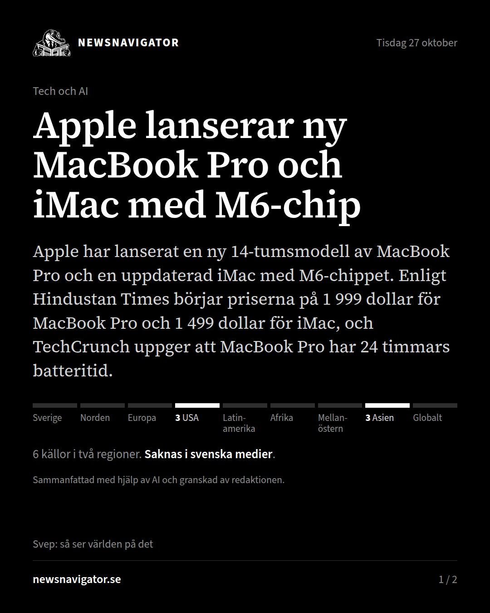
#48 · tech · 6 källor · 2026-10-27 Kräver din genomgång: Saknas i svenska medier
Apple lanserar ny MacBook Pro och iMac med M6-chip
Apple har lanserat en ny 14-tumsmodell av MacBook Pro och en uppdaterad iMac med M6-chippet. Enligt Hindustan Times börjar priserna på 1 999 dollar för MacBook Pro och 1 499 dollar för iMac, och TechCrunch uppger att MacBook Pro har 24 timmars batteritid.
Caption
Apple lanserar ny MacBook Pro och iMac med M6-chip
Apple har lanserat en ny 14-tumsmodell av MacBook Pro och en uppdaterad iMac med M6-chippet. Enligt Hindustan Times börjar priserna på 1 999 dollar för MacBook Pro och 1 499 dollar för iMac, och TechCrunch uppger att MacBook Pro har 24 timmars batteritid.
Så ser världen på det: Indiska Hindustan Times lyfter i rubriken priser och prestanda, med snabbare AI och förbättrad grafik. Amerikanska källor lyfter olika delar: TechCrunch lyfter batteritid samt stöd för Wi-Fi 7 och Bluetooth 6, Tom's Hardware lyfter uppdateringen av 14-tumsmodellen och iMac, och The Verge lyfter att entrénivåmodellen av MacBook Pro får M6-chippet, som enligt tidningen lanserades i augusti i Mac Mini. Singaporeanska The Straits Times lyfter i rubriken att Macarna ingår i en rad förändringar och att en touchlaptop nämns, medan CNA lyfter snabbare AI på enheten.
Källor: Hindustan Times, TechCrunch, The Straits Times, CNA, Tom's Hardware, The Verge
Hela notisen med alla länkar: https://newsnavigator.se/sv/n/a1e7bb3ea8/
In English: Apple launches new MacBook Pro and iMac with M6 chip
Sammanfattad med hjälp av AI och granskad av redaktionen. Vi levererar nyheterna. Vad du gör av dem är upp till dig.
#nyheter #newsnavigator #teknik #ai #sammanhang #källor
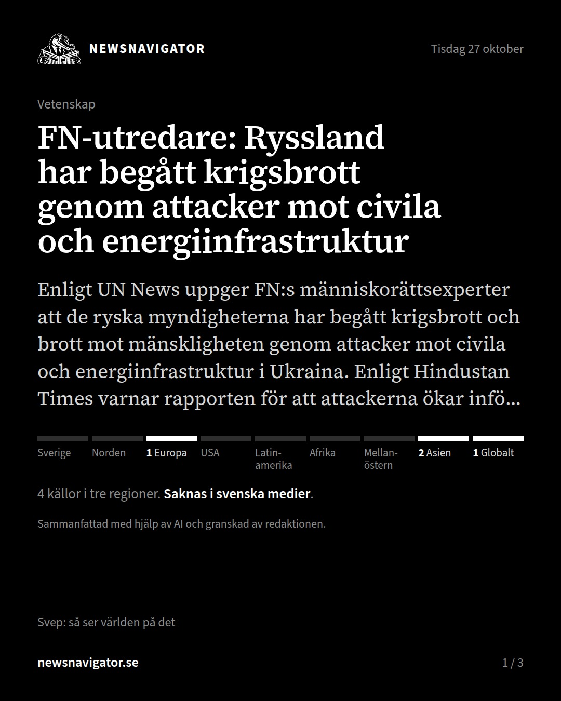
#49 · vetenskap · 4 källor · 2026-10-27 Kräver din genomgång: Saknas i svenska medier
FN-utredare: Ryssland har begått krigsbrott genom attacker mot civila och energiinfrastruktur
Enligt UN News uppger FN:s människorättsexperter att de ryska myndigheterna har begått krigsbrott och brott mot mänskligheten genom attacker mot civila och energiinfrastruktur i Ukraina. Enligt Hindustan Times varnar rapporten för att attackerna ökar inför vintern, vilket väcker oro för den civila befolkningen.
Caption
FN-utredare: Ryssland har begått krigsbrott genom attacker mot civila och energiinfrastruktur
Enligt UN News uppger FN:s människorättsexperter att de ryska myndigheterna har begått krigsbrott och brott mot mänskligheten genom attacker mot civila och energiinfrastruktur i Ukraina. Enligt Hindustan Times varnar rapporten för att attackerna ökar inför vintern, vilket väcker oro för den civila befolkningen.
Så ser världen på det: UN News, en FN-källa, och den ukrainska Kyiv Independent lyfter fram utredningens slutsats om krigsbrott i sina rubriker. Den indiska Hindustan Times lyfter i rubriken även Moskvas avvisande av rapporten. Den andra indiska källan, The Hindu, rubricerar ett annat ämne: Rysslands öppenhet för korta vapenvilor.
Källorna skiljer sig åt: Enligt Hindustan Times avvisar Moskva rapporten och kallar underlaget för falsifierat.
Källor: UN News, The Kyiv Independent, Hindustan Times, The Hindu
Hela notisen med alla länkar: https://newsnavigator.se/sv/n/f2f20413f4/
In English: UN investigators say Russia committed war crimes by attacking civilians and energy infrastructure
Sammanfattad med hjälp av AI och granskad av redaktionen. Vi levererar nyheterna. Vad du gör av dem är upp till dig.
#nyheter #newsnavigator #vetenskap #forskning #sammanhang #källor
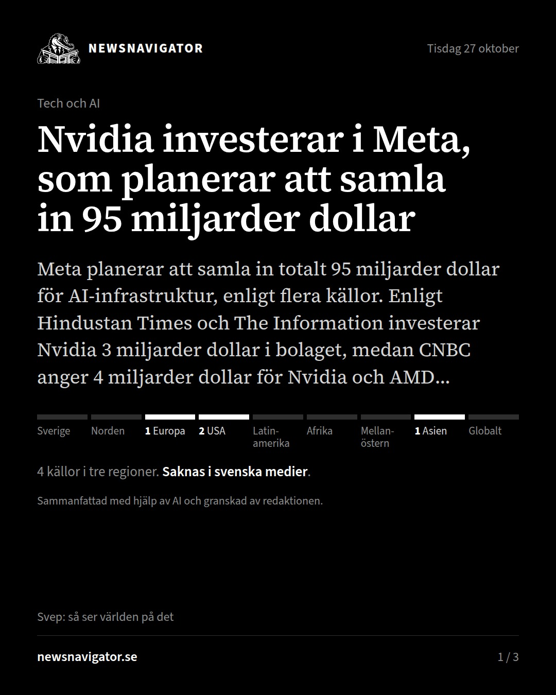
#50 · tech · 4 källor · 2026-10-27 Kräver din genomgång: Saknas i svenska medier
Nvidia investerar i Meta, som planerar att samla in 95 miljarder dollar
Meta planerar att samla in totalt 95 miljarder dollar för AI-infrastruktur, enligt flera källor. Enligt Hindustan Times och The Information investerar Nvidia 3 miljarder dollar i bolaget, medan CNBC anger 4 miljarder dollar för Nvidia och AMD tillsammans.
Caption
Nvidia investerar i Meta, som planerar att samla in 95 miljarder dollar
Meta planerar att samla in totalt 95 miljarder dollar för AI-infrastruktur, enligt flera källor. Enligt Hindustan Times och The Information investerar Nvidia 3 miljarder dollar i bolaget, medan CNBC anger 4 miljarder dollar för Nvidia och AMD tillsammans.
Så ser världen på det: CNBC lyfter att Nvidia och AMD investerar i Meta och beskriver det som ett fördjupat partnerskap mellan techjättar. The Information lyfter den fördjupade AI-partnerskapet mellan Nvidia och Meta. Hindustan Times lyfter Metas plan att expandera AI-infrastrukturen och utveckla avancerade AI-agenter. The Decoder lyfter att Meta planerar att köra fler av sina AI-agenter på Nvidia-hårdvara och köpa mer Nvidia-chip.
Källorna skiljer sig åt: CNBC anger att Nvidia och AMD tillsammans investerar 4 miljarder dollar i Meta. Hindustan Times, The Decoder och The Information anger att Nvidia investerar 3 miljarder dollar. Källorna anger inte hur de 4 miljarderna fördelas mellan Nvidia och AMD.
Källor: CNBC, Hindustan Times, The Decoder, The Information
Hela notisen med alla länkar: https://newsnavigator.se/sv/n/53ec80ffda/
In English: Nvidia invests in Meta, which plans to raise $95 billion
Sammanfattad med hjälp av AI och granskad av redaktionen. Vi levererar nyheterna. Vad du gör av dem är upp till dig.
#nyheter #newsnavigator #teknik #ai #sammanhang #källor
#51 · tech · 4 källor · 2026-10-28
Anthropic lämnar in börsunderlag till SEC och planerar notering på Nasdaq
Anthropic har lämnat in ett börsprospekt (S-1) till SEC och planerar notering på Nasdaq under tickern ANT, enligt The Decoder. Samma källa uppger kvartalsintäkter på 11,6 miljarder dollar och ett första operativt överskott i bolagets historia.
Caption
Anthropic lämnar in börsunderlag till SEC och planerar notering på Nasdaq
Anthropic har lämnat in ett börsprospekt (S-1) till SEC och planerar notering på Nasdaq under tickern ANT, enligt The Decoder. Samma källa uppger kvartalsintäkter på 11,6 miljarder dollar och ett första operativt överskott i bolagets historia.
Så ser världen på det: Amerikanska källor (The Verge och CNBC) lyfter spänningen mellan bolagets uppdrag och aktieägarnas krav respektive börsnoteringens betydelse för AI-branschen och räntorna. Den tyska källan The Decoder lyfter rekordintäkter och ökande åtaganden. Dagens Industri, svensk källa, skriver i rubriken att Wall Street sprudlar efter Anthropics besked.
Källor: The Verge, CNBC, The Decoder, Dagens industri
Hela notisen med alla länkar: https://newsnavigator.se/sv/n/f0977edcba/
In English: Anthropic files for IPO with SEC, plans Nasdaq listing
Sammanfattad med hjälp av AI och granskad av redaktionen. Vi levererar nyheterna. Vad du gör av dem är upp till dig.
#nyheter #newsnavigator #teknik #ai #sammanhang #källor
#52 · tech · 4 källor · 2026-10-27 Kräver din genomgång: Saknas i svenska medier
Anthropic lämnar offentligt in dokument för planerad börsnotering
Enligt The Information har Anthropic offentligt lämnat in sitt registreringsdokument (S-1) inför en planerad börsnotering. Deutsche Welle uppger att bolaget hoppas kunna ta in 100 miljarder dollar, och The Hindu rapporterar en halvårsförlust på 80,7 miljarder dollar.
Caption
Anthropic lämnar offentligt in dokument för planerad börsnotering
Enligt The Information har Anthropic offentligt lämnat in sitt registreringsdokument (S-1) inför en planerad börsnotering. Deutsche Welle uppger att bolaget hoppas kunna ta in 100 miljarder dollar, och The Hindu rapporterar en halvårsförlust på 80,7 miljarder dollar.
Så ser världen på det: Källorna lyfter fram olika delar. Axios (USA) och Deutsche Welle (Tyskland) skriver om börsnoteringens storlek, och Axios lyfter även att AI-affärerna uppgår till 235 miljarder dollar, nära en procent av USA:s BNP. The Information (USA) lyfter fram själva inlämningen av dokumentet. The Hindu (Indien) lyfter fram bolagets ekonomiska siffror för första halvåret: intäkter och nettoförlust.
Källorna skiljer sig åt: Axios (USA) skriver att börsnoteringen kan bli den största IPO:n någonsin, medan Deutsche Welle (Tyskland) skriver att den kan bli en av de största i historien. Deutsche Welle anger en målsumma på 100 miljarder dollar, en uppgift som inte nämns i de andra källorna.
Källor: Axios, Deutsche Welle, The Hindu, The Information
Hela notisen med alla länkar: https://newsnavigator.se/sv/n/f987539a72/
In English: Anthropic publicly files paperwork for planned IPO
Sammanfattad med hjälp av AI och granskad av redaktionen. Vi levererar nyheterna. Vad du gör av dem är upp till dig.
#nyheter #newsnavigator #teknik #ai #sammanhang #källor
#53 · tech · 3 källor · 2026-10-27
Entusiasm kring Anthropic lyfte Wall Street
The Japan Times beskriver Anthropics börsnotering som ett moment med stor betydelse för Wall Street och AI-boomen, och skriver att bolagets aktie sannolikt blir en viktig måttstock för boomen. Enligt CNBC kommer noteringen i en period då AI-handeln har tappat fart och räntorna stiger.
Caption
Entusiasm kring Anthropic lyfte Wall Street
The Japan Times beskriver Anthropics börsnotering som ett moment med stor betydelse för Wall Street och AI-boomen, och skriver att bolagets aktie sannolikt blir en viktig måttstock för boomen. Enligt CNBC kommer noteringen i en period då AI-handeln har tappat fart och räntorna stiger.
Så ser världen på det: Japan Times (Japan) och CNBC (USA) lyfter noteringens betydelse för Wall Street och AI-branschen framåt. CNBC lyfter dessutom att AI-handeln har tappat fart och att räntorna stiger. Dagens industri (Sverige) lyfter i sin rubrik att entusiasm kring Anthropic har lyft Wall Street.
Källorna skiljer sig åt: Källorna är inte oense om sakförhållanden, men om vad de lyfter fram. The Japan Times och CNBC beskriver noteringen som något med framtida betydelse. Dagens industri rapporterar i rubriken en marknadsrörelse som redan skett. Materialet visar inte tydligt om noteringen har genomförts.
Källor: The Japan Times, CNBC, Dagens industri
Hela notisen med alla länkar: https://newsnavigator.se/sv/n/a535201232/
In English: Enthusiasm around Anthropic lifted Wall Street
Sammanfattad med hjälp av AI och granskad av redaktionen. Vi levererar nyheterna. Vad du gör av dem är upp till dig.
#nyheter #newsnavigator #teknik #ai #sammanhang #källor
#54 · tech · 3 källor · 2026-10-27 Kräver din genomgång: Saknas i svenska medier
Meta planerar aktieemission på upp till 95 miljarder dollar för AI-satsning
Enligt CNBC och Financial Times planerar Meta att ta in 95 miljarder dollar genom nya aktier för att finansiera AI-infrastruktur. Enligt CNBC är Nvidia, AMD och Broadcom intresserade av aktier för upp till 5 miljarder dollar.
Caption
Meta planerar aktieemission på upp till 95 miljarder dollar för AI-satsning
Enligt CNBC och Financial Times planerar Meta att ta in 95 miljarder dollar genom nya aktier för att finansiera AI-infrastruktur. Enligt CNBC är Nvidia, AMD och Broadcom intresserade av aktier för upp till 5 miljarder dollar.
Så ser världen på det: Den tyska källan The Decoder, den amerikanska CNBC och den brittiska Financial Times lyfter fram olika saker. CNBC nämner chipföretagen Nvidia, AMD och Broadcom samt superintelligens, medan The Decoder och Financial Times framhåller finansieringen av AI-satsningen.
Källorna skiljer sig åt: Rubrikerna skiljer sig i formulering. CNBC skriver att Meta meddelar en aktieemission, medan The Decoder och Financial Times skriver att Meta planerar en sådan. The Decoder anger beloppet som upp till 95 miljarder dollar, medan CNBC och Financial Times anger 95 miljarder dollar.
Källor: The Decoder, CNBC, Financial Times
Hela notisen med alla länkar: https://newsnavigator.se/sv/n/f4861b5add/
In English: Meta plans stock sale of up to $95 billion to fund AI push
Sammanfattad med hjälp av AI och granskad av redaktionen. Vi levererar nyheterna. Vad du gör av dem är upp till dig.
#nyheter #newsnavigator #teknik #ai #sammanhang #källor
#55 · noje · 3 källor · 2026-10-28
Noah Wyle utsedd till världens sexigaste man av People
Enligt tidningen People har skådespelaren Noah Wyle utsetts till världens sexigaste man 2026. Motiveringen beskrivs bland annat som hans fängslande intensitet och filmstjärnelika utseende, skriver El País.
Caption
Noah Wyle utsedd till världens sexigaste man av People
Enligt tidningen People har skådespelaren Noah Wyle utsetts till världens sexigaste man 2026. Motiveringen beskrivs bland annat som hans fängslande intensitet och filmstjärnelika utseende, skriver El País.
Så ser världen på det: Svenska rubriker (Expressen och Aftonbladet) lyfter enbart utnämningen. Spanska El País lyfter även att Wyle spelar huvudrollen i ‘The Pitt’ och att han har vunnit två Emmy i rad.
Källor: Expressen Nöje, El País América, Aftonbladet Nöjesbladet
Hela notisen med alla länkar: https://newsnavigator.se/sv/n/257d15740e/
In English: Noah Wyle named world's sexiest man by People
Sammanfattad med hjälp av AI och granskad av redaktionen. Vi levererar nyheterna. Vad du gör av dem är upp till dig.
#nyheter #newsnavigator #nöje #spel #kultur #sammanhang #källor
#56 · noje · 3 källor · 2026-10-27
Walter Koenig, skådespelare i Star Trek, har dött
Skådespelaren Walter Koenig, känd från rollen som Pavel Chekov i Star Trek, har dött vid 90 års ålder. Det uppger Reuters via Daily Maverick; svenska Expressen och Aftonbladet rapporterar också dödsfallet.
Caption
Walter Koenig, skådespelare i Star Trek, har dött
Skådespelaren Walter Koenig, känd från rollen som Pavel Chekov i Star Trek, har dött vid 90 års ålder. Det uppger Reuters via Daily Maverick; svenska Expressen och Aftonbladet rapporterar också dödsfallet.
Så ser världen på det: Daily Maverick (Sydafrika) lyfter i rubriken fram namnet och rollen som Pavel Chekov. Expressen (Sverige) och Aftonbladet (Sverige) har korta rubriker som anger att Star Trek-stjärnan respektive Star Trek-skådespelaren har dött, utan att nämna namnet.
Källor: Daily Maverick, Expressen Nöje, Aftonbladet Nöjesbladet
Hela notisen med alla länkar: https://newsnavigator.se/sv/n/d62924f55a/
In English: Walter Koenig, who played Chekov in Star Trek, has died
Sammanfattad med hjälp av AI och granskad av redaktionen. Vi levererar nyheterna. Vad du gör av dem är upp till dig.
#nyheter #newsnavigator #nöje #spel #kultur #sammanhang #källor